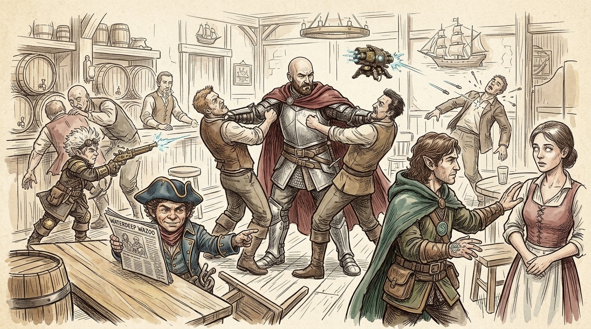
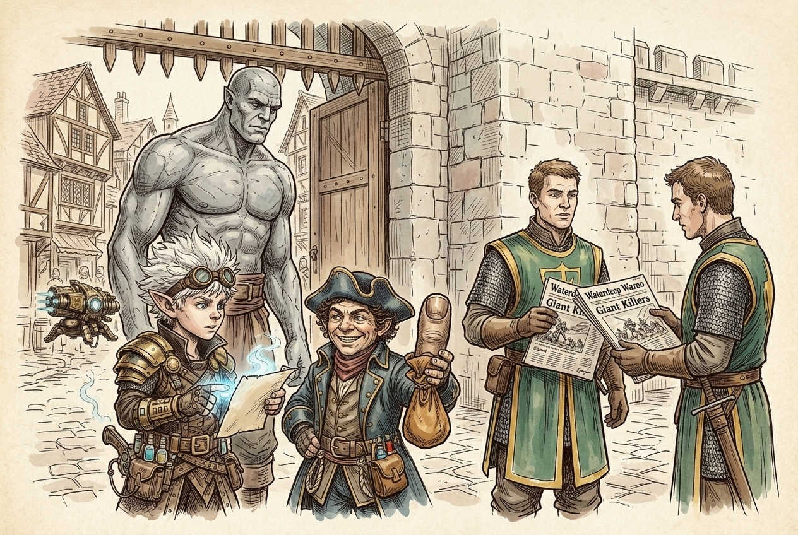
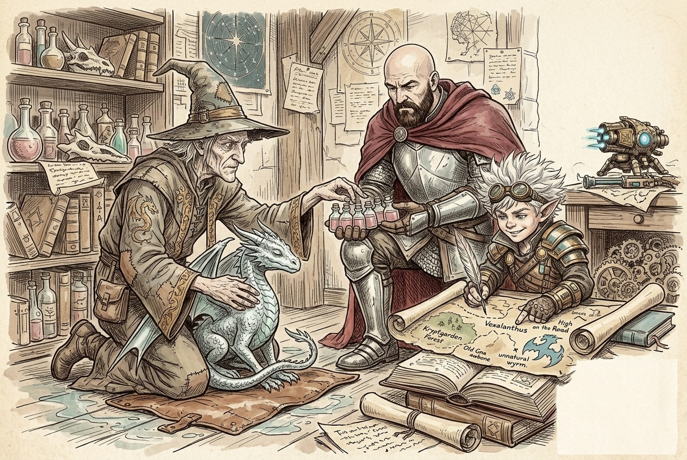
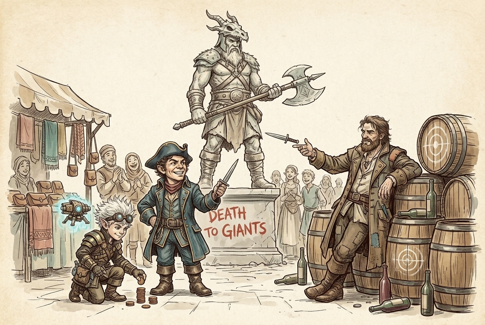
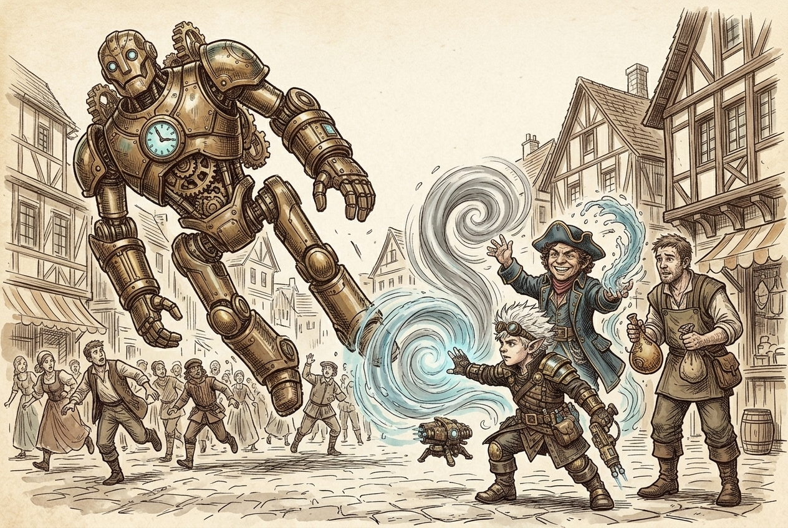
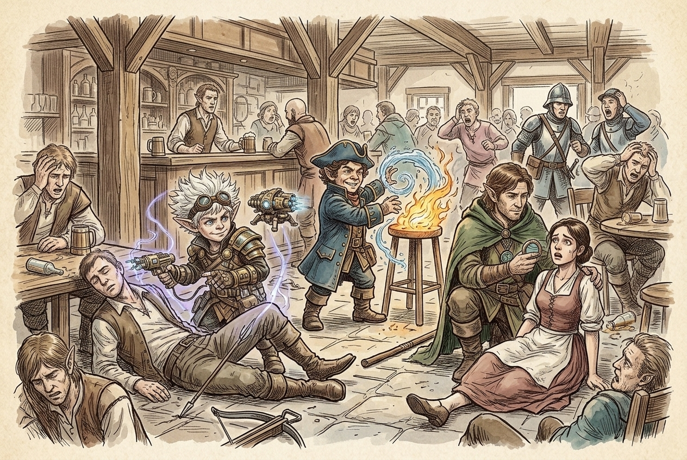

Session 2026-06-16

In brief: Making landfall in Waterdeep, the Crew found themselves front-page news, chased leads on Harshnag and the Oracle through a dragon-mad wizard and a bard by his statue, then broke up a mind-controlled bar brawl at the docks.
Arrival and the Wazoo

The crew rolled into Waterdeep through the south gate to find their own faces staring back from the front page of the Waterdeep Wazoo under the headline "Giant Killers." The gate guard, star-struck, traded a signed copy for one of the party's — a fair bargain, and useful too, since the paper carried a city map. While being processed, they watched the same guard refuse entry to a goliath and his wife; the man, called Cormeer, spoke Common, Elvish, Giant, and Yeti, and pleaded that he had a job waiting at the docks under a man named Brindle. Fiz vouched that the goliath was no giant, and the couple was let through — a favor Cormeer swore he'd remember.
Chazlauth's dragons

Naxene walked them to the estate of Chazlauth, a wizard so consumed by dragonlore that a stolen silver wyrmling darted between their legs on the way in. Over the recovered hatchling, Chazlauth answered their questions on Force Gray — Waterdeep's onetime adventuring company, led by Laeral Silverhand, of which Harshnag had been a member — and named the bard Vandal Lovelace, who kept vigil at Harshnag's statue, as their best lead. He pressed on them a tip that might matter more than any bard: Old Gnawbone, a green dragon in Kryptgarden Forest, hated giants enough that she might be recruited to help wrest a giant's conch when the time came. He also mentioned Vexalanthus, a copper dragon and old Force Gray ally who patrolled the High Road. Before they left, each of them received a potion of poison resistance, and Naxene offered her guest house for lodgings.
Vandal Lovelace at the statue

At Harshnag's statue in the North Ward — axe on shoulder, "Death to giants" painted across the plinth — Vandal Lovelace turned out to be another former Grey Hand himself, and cheerfully sang them the rest of the picture. Harshnag's last letter, sent by raven, placed him in Silverymoon. Getting there fast would mean the Harpers, a scattered and poorly organized secret order marked by silver harp pins and tattoos, who ran a teleportation-circle network. Fiz, with an old Harper friend from Halruaa in his memory, filled in the rest of the lore. Vandal named Yackerty, a dwarf Harper in the Trades Ward, as the man to see. He also confirmed that their old ship's navigator, Ol' Rourke, was down at the Deepwater Inn in the Dock Ward, and reminded them of the chain: Harshnag to the Oracle, the Oracle to a giant's conch, and a dragon, perhaps, to help take it.
Feather-falling a statue

Come morning — after Toz slept badly, dreaming again of black water — a two-story mechanical walking statue crashed out of true above a crowd. Toz and Fiz caught it on twin Feather Falls while Fiz talked the artificer through the fault. Its builder, Garley Gond, in gratitude, gave Fiz a leaking magical bladder pulled from the statue's guts, which Fiz's tinkering eye immediately recognized as an alchemy jug.
Valkur's Wave Hall and a dockside ambush

On the way to the docks, Toz slipped into a timbered Wave Hall of Valkur, confessed his new fear of water to the priest, and left with the god's holy book and homework to redeem himself. At the Deepwater Inn they found Ol' Rourke on a table, mid-story about the giants that sank the True Hand. He pointed them at Brindle Stormtide, a halfling ship-seller — the same Brindle the goliath had named at the gate. Before they could talk business, a stout woman's eyes went milk-white, and in the voice from Toz's dream she rasped, "You should have taken our offer." A dozen patrons and two of the Watch turned with her. The crew dropped the ringleader — Fiz opening with a dart-board flourish and a thrown poisoned dagger, Woz laying down non-lethal blows with a quarterstaff, Toz shape-watering a lit lamp before it could spread — and the moment the instigator fell, every set of white eyes cleared.
What's next
- Track down Yackerty in the Trades Ward and beg a Harper teleport to Silverymoon.
- Find Harshnag and, through him, the Oracle — then a giant's conch.
- Court a dragon ally: Old Gnawbone in Kryptgarden Forest, or the copper Vexalanthus on the High Road.
- Talk to Brindle Stormtide about a new ship, and check in on Cormeer the goliath.
- Figure out who sent the white-eyed thralls, and what "offer" Toz supposedly refused in his dreams.
- Toz has scripture to study for Valkur; his water-dreams and the malevolent presence beneath the sea remain unresolved.
Original session notes (Fiz's POV)
Head to Waterdeep. Recognized at gate by guard. Our pic is on the cover of local paper, the Waterdeep Wazoo. Sign copy for guard in exchange for copy.
A goliath (named Cormeer?) and his wife are told they can’t enter the city by a guard. He says he’s going to work for a man named Brindle. Guard thinks he’s a giant. I mention he’s not a giant, guard let’s them in.
Go to meet Chazlauth with Naxene. He has a little silver dragon, says it’s illegal. Dude is really into dragons. Ask him about Force Gray. Says a bard named Vandal Lovelace hangs out near statue of Harshnag. Laeral Silverhand is leader of Waterdeep. We tell him about our dragon battle.
He tells us about a green dragon, Old Gnawbone, might be able to help us kill giants. She’s in Kryptgarden Forest.
He gives each of us a potion of poison resistance
Naxene offers us a guest house to stay in.
Chaz tells us about the most popular tavern in Waterdeep, The Yawning Portal.
Go meet Vandal at Harshnag statue. He tells us Harshnag may be in Silverymoon. Says Harpers may be able to help us get there through their secret teleportation portal network.
Harpers are a poorly organized group identified by harp jewelry or tattoos. I have an old Harper friend I met in Halruaa.
Vandal tell us Yackerty, a dwarf Harper, may be able to help us. He’s in the Trades Ward.
Tells us about a copper dragon, Vexalanthus, that flies up and down the high road, ally of Force Gray.
Vandal knows our old shipmate Ol’ Rourke. Says he works down at the docks.
Harshnag can help us find the Oracle who can help us find a giant conch. Dragon may help get conch from giant
We go back to Naxene’s and rest.
In morning, see two story walking mechanical statue, something goes wrong and it begins to fall towards a group of people. Toz and I are able to cushion its fall with feather fall. I find problem with statue. Its maker, Garley, gives me a magical bladder (alchemy jug) from the statue.
We go find Ol’ Rourke at the Deep Water Inn at the docks. On the way there, Toz stops at a Valkur temple, gets bible from priest.
We find Ol’ Rourke telling story of giant attack on our ship to crowd of people. He tells us Brindle may be able to help us with a ship.
A bunch of tavern goers’ eyes turn white and attack. Spot the instigator. He says they are going to take back what’s theirs. Kill instigator and all the others snap out of it.
Raw transcript (649 chunks of auto-transcribed audio)
Lightly chunked. Expect overlap with table chatter.
We are now recording dandy session 12 .5. Alright, here we are. Rolling dice, I hope. Or it could just be me talking the whole time. We'll see. I can stare as fast as I can.
Okay, let's get in the cone better speed as possible. Up, I get a natural 20. He can progress. So, wouldn't that be a crazy quiz if James was actually the real DM? Yeah, that would be crazy. My funeral here has been presented.
Okay, so we last left off. You were all leaving Golden Fields. I was just going to jump ahead, but I think you wanted to talk with Maxine before you guys go. We want to spend more time in Golden. I was just thinking she gave us this note. I was just wondering if the note was still relevant to her.
Does she want to change anything about the note? She's coming with you guys. Okay. She's just offered to introduce you to this guy who is a dragon expert. Which guy? Who's this harsh guy?
The guy that you're supposed to deliver the letter to. Oh. I got that name somewhere. Okay. So, you guys are on the trail. She's in the back of a wagon that's being pulled by one of your horses.
Whose horses pulling the wagon? Do we all have horses? Do we all have horses? One of the small people who... You guys have five horses now. A team horse.
A team horse. A team horse, then. A team horse, yeah. A team horse, yeah. A team horse, yeah. We have a horse, but you guys came to fit horse.
We have a horse. We have a horse. We have a wagon horse that you made, you know, made friends with. This is why we need the recording. It seems hard to clip or something. Heat clip?
No. Is it an heirlet? I don't remember either. I have it. I need a old print bag. Oh my gosh.
Pardon me? That's quite a step of paper. Yeah. I'm very diligent. I got it. Reprinting the same document.
Yep. None of these were chatsy for you though. Well, anyway, she gave some attitude about having to ride in a wagon. Before he got his last, she got her on the road now. She's fine. She's in her traveling clothes.
Why attitude? She didn't want to ride in... She went nicer. Want to walk? She's a noble. Well, excuse me.
This will do, but we're gonna have to go into the South. I forgot about that one. I can't be seen in the North Ward looking like this. So, I'll go through the South. Sounds good. Anyway, I gave you that letter to Chosloff.
Chosloff. I think I should just make an introduction. My theory about all of this is... I hate running the wagon. My theory about all this is that we should seek out the good dragons. To help us with the giant problem.
You all mentioned something of a dragon encounter on your way to Goldenfield. He's not a good dragon if you bust him up. As far as I know. Right. The wrong guy. But dragons are doing stuff.
So... Yeah. I think Chosloff would be a good person to talk to. He's very well informed when it comes to dragons. A little odd, but... He's a little odd.
He's a little odd. He's a little odd, yeah. So he's that water deep? He's a dragon expert? Dragon expert in water deep. Yeah.
Okay. Um... Did I spell any of that right? L -A -U -A -T -E -R -G... I thought it was in the German. It's like Chosloff.
L -A -U -T -H. How many days travel is it to Butter? Three days. Because we'll arrive at the end of the third day. Nice. Up with that.
So we did arrive already? No. Nothing happened on the road. I don't believe I'm in the back. I got my familiar pack. Much more color.
I don't know where we are. Okay, so... Golden fields. Approaching the city. The wall, first from a distance, long before you reach it. Sorry, the wall, you see the wall first.
What do you think of this one? The defenses of water deep dominate the horizon. Mount water deep looms behind and above the city. It's a great fortified hill crowned by the castle, Castle water deep, and the city spills down its slopes toward the sea beyond. The city wall itself is an enormous, tall, thick, gray stone, studded with guard towers at regular intervals, banners snapping overhead. After the long road, the sheer scale of worked stone reads as safety and power in equal measure.
This is the largest, most ordered thing you've seen in the long world. Maybe your whole life. When you catch a... Taz, when Taz catches a glimpse of the ocean, he has a sinking feeling in his stomach. And the usual desire to be out at sea and among the waves and living on deck is replaced by a feeling of dread and fear. As you guys approach the city, it gets more crowded at the gate.
There's a long line of wagons. Do we notice this change in the ground? Um... Make a... make a perception roll. Do I have to save?
There we go. Oh. Oh, wow. 23. 23. Are you trying to keep these feelings hidden?
Um... I would say yes. I'm very embarrassed. This will be contested by your deception check. Okay. This is soft out.
15. Hmm. So... Well, you hold a brave face. Most don't notice, but... Can't hide from Taz.
Yeah. Taz, what's wrong? What are you talking about, Taz? Is there something you should tell us all of them? Um... Nothing.
I just, uh... I have a... I have a bad feeling about this. What are you? Yes. Something...
Something from beyond that I can't quite grasp. Trouble me. Hmm. All right. So the dirt road turns into a paved road, and there's just crowds of people coming in and out of the massive south gate. Ah...
This is what ordinary people have to wait for. Yep. Is there another way in? We could go into the north gate, but... I don't think I could be persuaded to do a thing like that. Unless...
You somehow had a, uh... Spell that could transform this carriage into something a little more appropriate. So the other way we can get it. Let's get it. Let's get it. Let's get it.
Let's get it. Let's get it. Let's get it. A lightning bolt to carriage now. That's on fire. Animal friendship.
Grease. Were you talking to me? me just saying random things now no misty step the whole thing inside I was considering a spell I think I could do all some nights and we can see no ma 'am I think we're just going to have to go in the old fashioned way unless you want to take a long rest so you can prepare something it's been like three days huh long rest eight hours has the travel been a long rest yes yeah you guys are long rest so I could prepare I think I might have illusion somewhere ooh a visibility that's just a creature pyrotechnics I can create a distraction move you're holding up the line sky right sorry let's just so the line progresses just go you guys eventually reach the front there is a guard checking all the people coming in just not in their status what they're doing welcome to water deep what's your name stage of business oh hey hey these are the guys on the cover of the wazoo who's wazoo who's wazoo? it's the wazoo the water deep wazoo there you go copy right here and he pulls out a newspaper and there on the front page of the newspaper it says giant killers and there's like a snapshot sketched from the scene of the other night in golden fields there's like two giants illuminated by a small flame and the five of you including Maxine like slinging spells and arrows and spikes growing around the giants I see that's us alright I pull out one of the thumbs see yeah and then raise it above my head wow some real adventurers heroes of the realm oh no thanks thanks yeah yeah three days on the road well can I have a copy of that? or is it easy you know what? is it easy to find?
give me yours sign mine and I'll give you this one great awesome that you happen to have a quilling pen on you so if you open the newspaper besides all of the other daily I do something better okay I think I can I think I have an artist or feature where I can cause a message to appear and I just like zap the paper oh I see a picture of yours he's like wow holds it reverently sets it down gingerly yeah it'll disappear in three days it's a concentration well I won't cause you any trouble you folks have a lovely day as you guys have this interaction with the guard there's a lane next to you and there's a very very tall man like maybe eight feet tall and one of the guards is yelling at him you're not allowed in Waterdeep we don't want your kind here you giant scum he appears much shorter than a giant what are you saying? yeah he's he's shorter than a giant um someone roll a history check no someone else roll a history check oh my god nat 20 nat 20 wow um so this oh yeah Jesus that didn't sound right there you go it's gotten a little um like goler I don't know why is it not hanging from the right crook is there a right one maybe it's hanging from the left one is that the problem? maybe um oh that is better yeah wow okay now we know um um yeah this man is actually um um he's a goliath which is like uh a long long descended kind of giant kin so has some giant blood in him but not really considered a giant and and and in addition to that you can tell by his clothes and what he's carrying that he is from a long long way south from the nation of Cormier um so he's like from one of the goliath tribes that live in Cormier um and it looks like this person has come a long long way and his manner of speaking you can tell that he speaks common like just a little bit um but his dialect makes him out to speak giant which uh goliath still still crimes wow put your next to the guard he's not a giant giants are much larger than that he's a goliath I just want to point out common elvish giant and yeti wow um you hear his wife say to him what are they saying we've come so far they have to let us in and he whispers to her I know a guy in the docks he'll vouch for me and he's got a job I don't know why they're not letting me through I don't understand please let through come long way and you uh said something to the guard um yeah uh roll a persuasion let's figure it with our recent encounter we we were with giant or something it's a persuasion yeah it's an 18 18 okay you because you're a hero I'll look the other way this time but anything happens from him you're responsible all right I don't know it I'm just saying he's not a giant well it sounds like you're the one who wants him in the city so bad I don't know actually we're I guess I was assuming you were trying to persuade him but maybe not you know what was he saying yeah hey what you you don't speak his language he was speaking common wasn't he he was speaking giant oh he was speaking we overheard can you get over here oh he was basically just saying that uh why wouldn't they let him in right he wasn't understanding that he's got a job came a long way yeah they have nothing left and he's got a job at the docks I don't know if you want to intercede but if you don't we just we our characters would know that he speaks a giant I presume yeah I knew that no it's okay I mean we've helped him out right so I mean it seems like do you want to do you want to talk to him um seems like okay sure okay you owe us I'm not going to talk to you I don't know if I would stick up for someone I don't know at all you know and vouch for them I'm sticking our neck out for the I was just pointing out because the guard said giants aren't that well he's not a giant that's all I was saying so I mean we could ask him like uh he says he has a job at the docks who's the job with or something name it's pretty organized dice hmm it's pretty organized dice ready for battle sorry good name anybody else listening to the battle royale name uh brindle brindle brindle brindle brindle brindle brindle like the color never mind just brindle brindle uh in your debt I am oh cool we got a yeti I mean uh the life and wife that's cool now what what do we do now they can pull the wagon my horse is tired yeah you pull he said he has a potential job offer on the docks yes uh a job uh fish fish job give me a fisherman something like that carry things okay you know someone down there on boat oh you know someone down there yeah are we still trying to get a boat oh I'm not interested in a boat right now I think we can wait a little bit on that one what's the matter you know I just uh I think we should uh check the town out a little bit before we uh rush to getting a boat all right yeah where are we gonna meet here well we gotta go to the north ward but I'm gonna have to um hire a proper carriage and get a little change of clothes proper carriage yeah there's there's a livery in the south ward okay if we're not gonna get a boat should we have done what? if we're not gonna get a boat we should get a proper carriage your choice um well you were gonna introduce us to this guy with a weird name yes Chaz Chaz Chaz yeah Chaz can we just call him Chaz? yeah you can stick with me if you want or you can wait a couple hours so you don't need us to deliver this letter or you can meet me in north ward your choice north ward what is that? do you have anything else to do?
north ward of water do you know water deep? do you know have you ever been to water deep? oh is there like a um I don't know welcome area or anything near the gate where you can get a map or anything of the town? not at all um in fact moving like as soon as you guys just step through the gate it's just so busy with people um people moving every which way and suddenly you're just like in the way of people like unless you keep moving you're just blocking the way of all the people coming through the gate alright we should move let's go to the north uh let's stick with that scene though yeah we'll stick with her for now alright can you show us a little bit or I mean we can escort you to wherever you need to go if you think you need to go here's um imagine a big city like this has lots of criminals yeah it's a it's a tough town especially what are we supposed to call the plan? sorry what's that what's that what like 30 seconds we know where the goliath the our goliath friend is going right so we can go find him later he's headed to the dock ward friend is pretty strong but just a guy hey there's a ever skeptic there's a map in the um question to the library that you got of the town the map in the where? in the newspaper oh the um water deep wazoo oh this is handy I will share the print is in here every episode this is too good where did you do that?
what was that? well I got that here oh yeah that's what I've been using for the past three sessions oh there's the uh water deep map on discord wonder if they have a printer here out of curiosity they may would they what? if they have a printer here oh yeah that'd be nice so we're in the southern ward you're in the southern ward that's where you end up water deep the circle at the south gate basically came in south gate on the high road deep water it's deep water in the south gate yeah it's deep water yeah trades ward dock ward something something city of the dead at the cemetery does she know Horsenegg? did you mention Horsenegg different? did you know a guy named Horsenegg? you asked me this before and I did mention that he was a member of Horsenegg?
yes I didn't know him personally I have seen his statue in the castle ward you know if he's here castle wards these are the locations he's in the garden yeah it's a lock it's a lock sounds awesome no it's Koroks so we're gonna be here for several months prepared everyone's for this stuff sitting in the den been doing nothing but this for you it's never the closest landmark in work our way so um she's gonna find she finds a little livery she hired a stable she knows her way around and she's confident the south ward by the way is like a middle class like it's not like the poor area it's like pretty clean it's nice another thing you notice is that there are guards everywhere like every corner there is a member of the watch standing vigilant okay okay okay next thing is it normal for all these watch guards to be around oh yeah okay just normal things normal security hang here once you're in if you head to the dock ward okay it's a little more loose there you'll still see plenty of watch around but you know uh yeah so do you have to be dead what do you think that would be my guess okay okay well um she hires a carriage she's going to the north ward uh to the north ward um you guys just want to go meet chasloff right now maybe surprise him i know he's not good yeah so anything that we can bring him as a gift maybe what do we want from chasloff get him in a better mood he's kind of a spoiled kid um i think he'll be excited to talk about dragons if you have anything dragon related we might hype him up a bit what was the letter about that you gave us for him well as i mentioned i had this idea that maybe we could go find some of the good dragons some of the like a i know i know there's gold dragons and platinum dragons in the realm i don't know how to find him so maybe chasloff will and who knows maybe they can help maybe they have information all right and uh obviously i can trust you guys so why don't you just come along all right um so she takes you to a stone tower so um entering the north ward she's got like a a nice carriage that's enclosed she doesn't really want you guys to be seen you're not really famous or famous adventurers okay that'll get you something here but in the north ward fashion's important and uh your name's important there's a lot of things that are important in the north ward so you know just don't embarrass me please okay uh she takes you to a stone tower there's a um start talking to the horses animal friendship as a ritual it's a cantrip is it a it's not it is down hallucinating bullshit but i think that you can be capped as a ritual yeah yeah it takes an hour ten minutes ten minutes yeah he doesn't retain the ability to speak with his friend that was uh he does every time he casts the saw oh for the direction oh you can talk to the horse all you want yeah that's what I mean I didn't mean like actually have a conversation well i thought you wanted me to role play a horse you were bored of the scenes you know you'd bring a horse in which wasn't gonna help um okay uh stone tower um the northward is not as busy there's like people around um and there's uh plenty of watch everywhere um the stone tower has uh two dragon statues on each side of it and a uh dragon statue over the center of the door there's a bronze knocker in the shape of a dragon's head nerd delfindal i believe that's the name of the horse what's that delfindal delfindal no that's all wrong put her up down okay well delfindal it is delfindal uh uh maxine looks around at you guys and then proceeds to hammer on the knocker i look around at other people's outfits and then i type some stuff on my armor transforms into a nice set of gold oh nice what do the rest of you look like but the rest of us are screwed i'm wearing nice heavy armor with uh i'm wearing chain mail chain mail would you like is it like clean and polished yeah of course you can't have to discuss it okay i'm just wearing loose airy clothing with slight you know nautical look to it it's kind of my captain's guard still okay okay you got a tri -corner hat yeah i do have a tri -corner hat nice oh heavy armor with uh skins cleaned shiny yeah tanned all right um uh she knocks and the door just kind of opens a little bit and um i don't know doesn't answer it should go in let's go friends or points okay i'm going in okay somebody tries you said he's my friend yeah you said i didn't say would you call out to him call out at me non -committable um she pushes the door open a little more and she says chas chas and at that moment a tiny creature rushes out of the door a flash of silver rushes past you guys um and you hear a voice uh call from inside stop that stop that dragon baby silver dragon um come on one of the signs so looking around there is a tiny baby dragon wormling uh with bright silver scales magic we just catch it um dashes dashes out the door what do you guys do cast fireball do the uh spike growth i cast uh gust of wind in the direction opposite the dragon's travel i mean i could cast animal friendship i cast grease he casts wind and he casts animal friendship yeah okay so you cast gust you guys really all doing that no it's just come on stop the dragon it's a 15 dc throw you want to try to need it for what animal friendship animal friendship yeah why is he gonna run away for friends doesn't that spell well actually it's a baby so maybe is it intelligent yet is a baby human considered beasts dragon a lot of beasts would a main chain effect um it's gonna roll a strength save against gust of wind what's it easy uh you want to spell would be saved which is has to make a deck save against grease okay uh 16 you're right uh it fails the save against gust okay and it gets blasted over the grease over the grease i mean right through it again it's sliding it succeeds it blasts into the door and the guy catches it oh man whew let's get in it's soft let's get in okay all right close the door close the door close the door oh man these are super illegal uh illegal why are they illegal uh professor drothcala what are you doing here that's maxine's lesson that's maxine's lesson uh okay i need something from you chas oh and it's not professor drothcala anymore you can just call me maxine you're a grown man how old is this guy he looks to be in his mid -30s human human yeah um he's wearing like uh some robes that look like sleepwear and they're fashioned after dragon scales um his apartment is like smoky i mean the bottom floor of this tower is there's like a little layer of smoke hanging in the room um it's like dark with like candle lit and then there's just like dragons everywhere dragon statues there's like a baby not real but only one baby dragon oh that we can yeah yeah just one live dragon okay so he has like a fog machine in here he's like a stoner but he really likes lizards yeah oh is that kind of smoke in the londis it's a deep purple playing deep purple dragon uh yeah so uh what what can i do for you this like have a seat or whatever any chair you find just covered in crumbs we heard you're dragon expert we're talking about dragons oh you know you want to talk about dragons oh man what color do they come in you know about dragons who have so many okay so there's not just like the chromatic dragons oh uh there's metallic dragons which you probably know but there's new research coming out about a whole new variety gem dragons are they good or evil they're like in between you know but this may surprise you not all chromatic dragons are evil not all metallic dragons are good they each have their own you know independent will and desires and motivations name one good dragon one good dragon yeah this little baby right here that's a silver dragon touche yeah she's just she's just oh man dude imagining like you know like a one of those pitbull like enthusiasts and has like pitbull like shirts like the singer or the singer dog oh the dog oh the dog yeah anyway yeah I enjoy this and watch your babies with some what's up something to do with giants right giants or the giants giants talking about giants and bears dragons are the natural enemies of giants that's true that's what I heard giants and dragons were at war for over a hundred years are they friends now no no all dragons or just the metallic dragons are there any no even all dragons all dragons do not like giants are there any good dragons that are friends with any giants yeah I think there's exceptions for sure for sure for sure um obviously there's the famous example of harshnag who's a city defender who's who's who's he friends with dragon wise um well I mean harshnag is a giant or a dragon a giant yeah yeah right uh you know there uh the name escapes me but there was a copper dragon who often uh worked with force gray as a as an ally and confidant was Bill harshnag no I didn't know he's very famous though yeah you should like us there's a statue yeah there's a statue oh it might be good to see the statues of what it looks like or do you have a picture of him or should we just go look at the statue um I don't have a picture of him he's famous yeah he's famous I mean I got a picture of him I don't know I'll just have pictures of random giants black dragons okay well yeah dragons are just that's true they are can we know how to make a half dragon that's a thing can we know of force grays you've heard of them yeah is that a person no it's an adventuring group oh that's right that uh harshnag was part of and they're who else was in force well um the uh president um what's her name lionel silverhand she's the high lord of waterdeep she was in force gray yeah um there was that bard who's name was um you know i don't know his name is here vandal vandal lovelace nice yeah is he still around yeah he's still picture around town yeah nowhere um he well he does hang out down at the statue quite a bit at the statue yeah he plays there like most days um and then i think uh he you know you can find posters for where he's performing um he kind of hops around the different taverns around the city um usually doesn't play the north ward though it's more of a southward kind of bet how many dragons have you met so um besides this one i think i still haven't like officially met how did you get this my dad got it for me who's your dad my dad you mean mr. yarghorn yeah who is this guy who can acquire a dragon well uh i mean you know he's got a lot of money he owns a bunch of boats owns a bunch of buildings he tried to teach me all this stuff and i was like you know what dad i'm not following in the family whatever it is business i'm gonna do dragon stuff and he said you know something something and then i don't know i cried and then he said he'd keep funding my tower do you know where he got the dragon from do i know where he got the dragon uh i mean you know when you have a bunch of ships coming in and out you know people probably you know that's a good question i know the dragon eggs can be purchased it's hard to hatch dragon egg but um i should ask you so there's two people in this town who know harshnag right there's the bar guy and then vandalov lason who was the leader the president president of what did you call it yeah lionel silverhand president water is that president that's right yeah we tangled with the blue dragon on our adventures would you was what do they call it nah is it blue or is it red like you thought it was blue it was blue yeah there were griffins involved difference yeah i knew they had a good color like okay baby dragon yeah well it was quite large about the size of this house you said it was blue though he smoked it pretty good you said it was blue yeah they do i think it was blue that's my recollection were you like in his territory no it was um was it the territory of the clouds believe it or not because we were hitching a ride with our we were in a flood we were with a cloud gym yeah oh that's really unusual behavior for a young blue dragon blue dragon especially when they're younger extremely they tend to just kind of stick to their layer you know they can be kind of like persuaded to go out for like big treasures and stuff like that because you know they love adding to their horde but like most of all like you said they came chasing you in the sky the giant named zephyrus i don't know if that sounds good oh i don't know what that is i don't know what a giant small dragon but i will say that for a dragon to go on a mission like that someone really powerful points and strength that's very suspicious there are a lot of little little dragons like little what do they call them worms vibran black dragons like gargoyles those gargoyles there were gargoyles there was like one little helper guy there was a helper guy that was like flying up and then we knocked him out of the air and he fell to his death what was that dude i thought he was a good dragon he was riding the dragon oh that was a half dragon half dragon yeah i thought that was a lesser dragon did you relay all this to him yes sure wait cobalt a half dragon and you said was a half dragon also half dragon or dragonborn i believe so yeah no they're fully different okay is it like a lesser sneak what is a half dragon so a dragonborn is like a race of people like you're born a dragonborn like your mother was a dragonborn and you were hatched so it was like a half dragonborn like born a half dragon all right really let's really get it half dragon what is the difference is when you take a man or woman or whatever and we're halfling gnome all or both half okay awesome half elk when you take one of these one of these people and you perform an ancient dragon performs a ritual that can turn a man into a half dragon and he has like bathed in her blood oh yes it's a real so it's a choice gross real devotee kind of thing to become a half dragon this is like cult of the dragon business that you guys are dealing in you're gonna kill this person yes I got an idea I got an idea yeah hold on a second he like pulled out some notes yeah no and that's where is this yeah okay so there is this green dragon that I know about I know I don't I haven't met her but there is a lot of people that I know that have done business with old nava old nava yeah ancient green dragon but good dragon well or it's complicated it's complicated see here's what I'm thinking is there's all this like giant stuff going on and you guys say you're like doing stuff with giants you're like anti -giant you're like trying to kill them kill one we're not trying to kill them necessarily we're trying to you should relay the whole ordning thing do you know with ordning explain in every detail there's a hierarchy you know ordning of the giants it's been broken the hill of giants from the bottom and that's one of the ones that killed right oops yeah but we met a cloud giant who's pretty high on the list he was pretty cool but the ordning is broken the ordning is broken so the giants are all all squabbling now to figure out who's in charge of the giants they're all fighting for power I understand all okay wow so what do you think is there a dragon version of the ordning we're surprisingly sure no well okay so there's two dragon gods I mean there's bahamut and there's tiamat yeah and that's kind of where the good and evil kind of chromatic tiamat metallic bahamut sort of comes from it really is just those dragons natural allegiance to those deities but tiamat's trapped in the nine hells so you know who knows even what's going on anymore old nabu i think if you guys go to her and are like hey we want to kill some giants she would probably be in there she might or is she i don't know if our old's becone is to kill giants we're gonna kill some giants she's in a according to this okay so uh yeah some merchants had gone there uh did a bunch of business with her and it looks like they were in the crypt garden forest that's where the merchants went to crypt garden forest yeah that is apparently where old nabu is that in town or is that no no no no it's out in the wild crypt garden forest yeah yeah you have a map i can mark sorry goodbye getting all got a map right here um maxine is still here right yeah yeah i asked her was this what you had in mind for no i i didn't want help from a chromatic dragon that sounds like suicide what was your idea i mean i thought maybe we would find a metallic dragon do you know any metallic dragons yeah green dragons you know if i did i would probably be with them right now the copper dragon that was with the gray harshnag harshnag mew okay that was that was that was that was really the bard to know too so we should seek the Bard. And if he doesn't know how to find our thing. And there's the leader of him too. She seems less accessible. Let's not see if you want to talk to the president.
You want an audience with Laurel Silverhand? Yeah, get a plan. I thought it was Lionel. Take me to your leader. And have an ultimate fighting thing right in front of me. And she's asleep.
No, no, we'll talk to the Bard guy first. How's Waterdeep doing with all these giant things? Well stamped. On like Goldenfield. Have there been any giant incidents here? No giants here.
I mean, it's probably the best offended city in the whole north. No. We'll just have to find it on this map. So there's no, uh, any other search. Is there anything interesting about other Kermode Dragons? Tell me about the Panadragon.
You're interested in the red ones. Those are of the element of fire. Might be obvious. Everyone knows that. So blue is lightning. What's green?
Poison? Yeah, poison. It's yellow. Maybe it isn't yellow. Maybe you're thinking of gold, which is also fire. There's no yellow.
There's no yellow. There's white. There's black. There's no Pantone spectrum. What the fuck is this shit? You shit.
Color of the year. Do you guys remember this Oracle thing? They... They... Okay, so the first town we were in, there was something that the giants stole, right? Right.
Where's your map? You know what he's about? We still have the genie models. We don't know what that is. We got this horse. And this horse?
Oh, that thing's still there. Oh, okay. Chekhov's genie model. This is where... West? Westbridge?
Where, um... Old Bobo lives. Okay. The green dragon. I can't read that. Crypt garden forest, I see it.
Oh. Um... One of the... I think the half -blood dragon... Sorry, the half -dragon dropped this, uh, necklace, and it showed the blood well vial. Can I remember this correctly?
It's one of the... I think it was spelled out. Does this mean anything to you? Is this your blood in there? No. Uh...
Is this from the half... Half -dragon? I thought it was, but it might be necessary. No, his blood turned to ash when he died. Um, okay. So then it must be my blood.
We do have dragon blood. We have dragon blood? We have dragon blood. Yeah, we also have giant thumbs. We have two liter jar of dragon blood. Wow.
Two liters. What's a two liter jar of dragon blood? In a dragon tooth. What do you want for that? What do you do with... What do people do with dragon blood?
Are they in it? Well, um... If you know the dragon... And then we could find them, magic. Or, I don't know, I just want it. Could it be used to find a relation of the dragon in question?
Maybe, if you found a powerful enough cleric. Oh, the blood of the dragon that we killed? Yeah, the dragon we killed, so we could find perhaps its parent blue dragon using its blood. And then it's like, we killed each other. Is that possible? Can we do that?
I don't know, that's over my head. You're not. Maybe, I would find a powerful cleric. You taught us about half dragons. That doesn't interest you at all, does it? To become a half dragon?
No. Is that what you want to play? Are you just going to take a bath in this blood? What did you think of that? I don't think it's enough, plus you need a dragon to perform the ritual. Ah, okay.
I think we'll hang on to the blood then. It could be helpful to us in finding... I mean, what does the... What would you be willing to buy the blood for? How much? Ten gold or maybe blood?
Two liters? Two liters. That's right. There was some property in this blood. What do you want for? We'll shop around.
Yeah. What do you want for? Group in the marketplace. What do you want for? What do you want for this dragon? I don't think it's for sale.
I don't recall. I don't think it's for sale. The dragon tooth on the other hand, maybe. E -Y won't be big. Dragon tooth? I don't know if that is any...
I'm a blue dragon? Yeah, I would want that, sure. It'll just take anything. I mean... Look, the dragon tooth. Super cool.
Yeah. No arguing. So, are you going to sell it to me, or...? We'll think about it. We'll get back to it. We'll be in town for a little while.
We'll come back. We might find a useful stuff. Yeah. Um, it's been very helpful. I think we're going to depart for now. Find this bard guy.
Find this bard guy. Whatever he needs. My notes say, harsh nag, to help us find or speak with the oracle. But I don't know why we want to talk to this oracle. Or, isn't there something about the oracle? We have like an...
Isn't there something to do with like a conch or something that allows to go underwater? Or am I just...? Is the oracle the one who's actually in the maelstrom? I think? She's in the spine of the world. Right.
Which is like in the middle of the ocean. Isn't that just up here? Oh, she's in the spine of the world? Okay. That's what I wrote down. Oh, it's the giant leaders in the maelstrom.
Yeah. The leaders in the ocean, right? That makes sense. And we need to... Oracle could maybe help us find them. Yeah.
Because I think that's why we went to Goldenfield originally. Because there's a giant that we can try to talk to and then we have to just have a burger around. Um, question is why you need to go to the oracle? Is it to find the old dragon leader? Well, that's the one vying for... that's the one that's trying to be the top dog?
Um... Well, there was one that was at the top. And he disappeared. Right. So the oracle will, um, give you, uh, knowledge that will help you defeat the giant lords. The giant lords.
And the one in the maelstrom is one of the giant lords? Which, um, you need one of their con... Conks. Conks. Conks. Yeah, that's right.
You mustn't need to go oracle. You're going to, um, maelstrom, the, um, storm king's... Storm king? Domain. Storm giant. Okay.
The king of giants is missing. Right. And the conk, what is that... So... Is that underwater? You learn that each...
Yeah, it's deep, deep underwater. Okay, so that was not... You learn that each giant has an item that allows them to teleport there. Ah, right. Alright. Come on, hold on.
As far as we know, horse -naggies... I remember... The other spying in New York, right? You learn that, yeah. There was a nice visual in the hierarchy. I don't know.
Pretty high open. Has nothing to do with the text. So we know a quick darkness. Uh, was there another question I was trying to answer right now? Oh, no, but, um... Uh, Chaws.
Um, before you guys go, um... Are you gonna go see Old Naba? I have something that might help you. Yeah, we're gonna go see him. Hold on. Definitely.
Old Naba? Old Naba? The green dragon. Yeah. The green dragon. That loves killing giants.
The evil dragon? Not evil. Old. They're good and bad dragons, we just learned. He reaches under a desk, and he pulls out a box, and he looks to the box, and the box like clatters with some glass shaking. Oh, hold on.
He's like looking at different bottles. Uh, this one... This one... This one... This one... This one...
This one... Here. You can each have one. This will give you resistance to the poison. In case, you know, you need... Old Naba doesn't take a liking to us.
Right. Okay. Thank you. Well... Okay. Thanks.
What would we get from Old Naba if we went there? You'd be excited about killing giants. Kill giants. We hate giants too! Potentially a very powerful ally. Okay.
Maybe we'll be able to fly as someone. Ooh! That's a... It's a potion never -ending potion. A potion of resistance? That's a...
Poison resistance. That's a potion of resistance. Okay. Sweet. I think in the, um... Player's Handbook it's listed as anti -venom.
Should I just add that to our... Party inventory? Yeah. Uh, four... Four... Four potions.
Antitoxin. Okay. Let's see. So... No results for an anti. Red's to pull now.
Yeah. You'll see Mr. Bard first. So there's an antitoxin that gives advantage on saving throws against poison. That's not it. I think he's considered an antidote to the venom, the poison.
Yeah, it gives you resistance to poison. What does resistance mean? Oh, you know what? I think poison is a potion of poison resistance. There's a potion of poison resistance. It's that.
It's not antitoxin. Antitoxin is worse. It's that. Potion. Potion. Poison resistance.
Poison resistance. Four of those. How long does that last? One hour. Oh, shoot, I read Jack. Just kidding.
There's a sneak shot from me. I guess that is better. I have a dagger. It's a poison dagger. I can stab you if you want. See if it works.
I added those to our party inventory. Cool. Up to the bard. I'm going off to Harshnag's statue to find the bard. Everybody's saying that it's Balmar or something? Yeah.
Let's keep our eyes open while we walk through town, see if there's anything cool. I guess next scene is relieved. If this thing with the bard doesn't work out, is there any chance you can introduce us to Lionel? To Lionel Silverhand? That's a maybe. That's a maybe.
Are you going to be around? Yeah. Look, if you guys need a place to stay, you can stay in one of our guest houses. Awesome. Sweet. You are so nice.
Who's ours? The Drathcala family. Does it have a pool? Is that a bushing? It's got more than one pool, obviously. Do they have bidets?
Yes. A bidet has been invented yet. What's her name again? Well, we're talking to... I see. I see.
What do servants do? Huh. I don't know. I don't know how... Maybe I'll operate. Okay, then.
Everybody poops next. I don't know about the D &D world, if that's true. I mean, the president of our people. Not everyone may poop here. I think everybody does. Yeah, she gives you a direct answer to your house, and says the aspirin.
She gives us a passcode? No, she just says the aspirin. Which is the aspirin, actually. I don't know. Her name is the aspirin. Cool.
So, you guys... How are you... Are you leaving the North Ward? Should we ask... What's his name again? Chaz?
Chaz. Should we ask Chaz? What are the cool taverns not in North Ward? What are the cool taverns that are not in North Ward? Cool taverns near the statue, or? Where the bard would be.
Um, said that she... He hangs up near the statue. Yeah, he's not performing. He's not performing. He's busking near the statue, or something. The Hawkman statue.
Uh, Chaz, um... Looks a little embarrassed. For a moment. And... Uh... You know what?
I go out with my friends. Do you know how many friends do you have? Because I have... Do you want to hang out with us? Ooh. Hey, you want to go tie one on?
Okay. You guys want to, like... What'd you show us around? ...shay here and, like, read and talk about dragons? Do you want to put your dragon in its kennel and go out to the tavern? I have this, like, really sick music box.
This is bard's name. Um, but he tells you about... Do you want to bring the music links? Basically the biggest, most famous tavern in Waterdeep. What's the bard's name again? Uh, I wrote down the news.
Also, like, Vandal Lovelace. Oh, yeah, obviously. Vandal Lovelace. Vandal? He tells you about... Vandal.
The, uh, the yawning portal. The yawning portal. That's the name of the tavern? Yes. That's badass. You want to go to the yawning portal?
It's in the castle port. Okay. To the bard. Mr. Lovelace. Is that where he thinks we should...
We'll find Vandal Lovelace? Or that's just a cool tavern? You guys asked him about a tavern. Yeah. He told you the one that he knows about. Because he is, uh, not a very outgoing person.
Yeah. You mean loser. Exactly. So the castle ward is... Wait, we're already at the north ward. Hey, Nick.
I'm lost some electrons. Really? Can I borrow your cable from your gear? Oh. No, never mind. I've got one.
Is the hawk away in the statue? I've got a USB -C in the statue. What is the statue you were talking about? Hawkman? Yeah. The hawkman.
Hawkman. I don't know where you're talking about. I need to see the hawkman. What the hell? Oh, look. I don't know any detail on this map.
I showed you that. It's a location. The hawkman. I mean, you know what? In the castle ward. Look, if you guys go there, you can go there.
Go there. We'll figure it out. It's just for like one of those... It's all good. It's like seeing the Statue of Liberty. You've got to at least make eye contact with it before you leave.
Or else you'll say, I missed out on the hawkman. It's just a dude. It kind of looks like a hawk. Oh, does this thing talk? The yawning portal? The yawning portal.
The yawning portal. The yawning portal. Must be a real snooze. Did you guys go see the hawkman? No. What happened?
It's in the north warden, isn't it? No, no, no. It's in the castle warden. That's why I was... It was in the castle warden. Okay.
The hawkman? The hawkman. The hawkman. It was the hawkman. I don't know, but it's got a star on it. I don't know.
Okay, so, uh... It's in Zellin's alley. To get to... What about the honorable knight? Don't care. With a god catcher.
That sounds pretty interesting. And, uh, where's the... So, uh... So, the, um... Statue of Parshnag is... Where...
Uh... It's next... It's just west of the market. Where, um... Where, um... Callumaster Lane...
Meets... The Street of Silks. Okay. A little past the great drunkard. Where's the... I don't see if you need any, uh...
Supplies while we're here. That's what I was saying, is while we walk... Are you guys open for anything? Yeah, we're looking for interesting shops along the way. This is a very large town. Can you pass through the market?
Yeah. Okay. So, um... It's getting towards sundown. Um... You guys just...
Just browse, or is there anything you're looking for in particular? It might be time to gear up. Maybe a little bit. Does anybody need any armor? You guys can find... Anything you can find in Flair's Handbook.
That you can find here. Anything in the, um... Adventuring Gear section. Is, uh... For sale here. Okay.
Any magical items? For sale. Um... If you want to find a magical item for sale, you have to do a bit of, um... Digging. Research and work.
So, you can either spend, like, a number of hours browsing the market. Uh... And say there's, like, one hour left of shopping time. Um... Or you can try to find, like, uh... Some...
Somebody who deals in magical wares, um... Through, like, investigation and research. Um... What page do I find? It's... It's not.
But, uh... Magic items aren't, like... You don't see any really. Just kind of hanging out and melting. Adventuring Gear. I think, um...
Because it's a little sundown, we should do this maybe tomorrow. Sure. There's not really much time to search properly. Do we hear any music from, you know, the statue? So... Passable clothes?
Uh... Approaching the statue. You guys find. Um... It's a statue of a great frost giant. He's wearing a dragon skull as a helmet.
He's got a, um... Large, two -bladed axe slung over his shoulder. Um... Is it a statue? Yeah. This is the statue of Karshnag.
Karshnag. Um... There's a little plaque under it. Um... Karshnag of Force Gray. We honor him for defending our city.
The great battle of... Yeah, yeah. He got a DR -1354. Um... But the statue... Is like...
Uh... There's like, uh... Death to giants painted across the base of it. And like, the statue of Karshnag is covered in like, vegetables and things that people have pelted it with. Um... It's not in good shape.
But there is a bard standing in front of it. And he is singing a, um... Jolly tune. Praising the deeds of the hero, Karshnag. His name is Elvis? You don't know.
You just see a guy singing about Karshnag. I think it's probably him. Start bopping. Watch for a while. And I try not to brag. But his name was Horshnag.
He just sings that line for three hours. That's very amazing. You suck, Lovelace. Can't win them all, I'm afraid. Hey, folks. Hi, hey.
Howdy. Could I interest you in a tale about the great hero, Horshnag? Sure. Sure. And also, where he is. Where he is?
Are you serious? Yeah, I'm serious. What was your first year of the tale? What do you mean? Tale of Horshnag. Let's start at the beginning.
Where was he born? He was born... Um... In the spine of the world. Ah. With the other frost giants.
Yes. That's good information. He, uh... He was left behind a hunting party. And, uh... Was raised in the wilds.
By Uthgart barbarians. Once he grew too big, He left them and wandered around the north. Doing small jobs for small towns. Until he eventually wandered to Waterdeep. Where he saved some villagers from an escaped troll. And, uh...
That's when he was initiated into Force Grey. And that was the story of when Horshnag first came to Waterdeep and... Saved a child from a troll. Flash���������������������������������������������������������������������������������������������������������������������������������������������������������������������������������������������������������������������������� No, no. You know, people rightfully have their fear of giants. Their memories are very short.
It wasn't but ten years ago that Harshnag stood on those very walls and defended the city against a massive orc invasion. Did you know him? Yeah, I was also a member of Forest Grey. Oh. What happened? What happened to Forest Grey?
Well, Lionel went into politics. Harshnag wanted to travel the wilds. I found my way to the bottom of a bottle. And the other members. What happened to the other members? Nobody was there to keep it going?
Yeah. So it was just dissolved? Well, the one died. That was hard. The one? Yep.
That's quite a name. Yep. Not like the one. Just um... The uh... What's up, Darren?
Thank you. Anyway, there's uh... There's me, there's Lionel, and there's Harshnag. I mean, there were a lot of Greyhands. Just uh, you know, the less notable members. Yes.
Have you heard anything about Harshnag's whereabouts since he left for the wilds? I might... no. I might have heard from him not too long ago. Uh, flick him another silver. Silver?
Yeah. Yeah. And silver. We're gonna rob him. One more drinks. Alright.
How much is a drink? Last I heard, he was on his way to Silver England. Silver what? Silver England. Silver England. We've heard that.
Where the elves are? No, wait, wait, wait. Oh, no, no, no, no, no, no, no. We have heard that. We've heard of silver. Right here.
Does your character have something with Silver Moon? The Paladin? Raven, someone. The enchanter guy. Barros Ravenkai. Barros.
Can make us a... an animal messenger contact. Zephyros? Is that him? No. Oh, yeah.
Zephyros let you know about that guy. Yeah. It was Zephyros's guy. Um... So what are you guys asking about Parson? Parson as a dragon?
Relay... Ordning... Yadda yadda. And you guys... Gotta find the Storm King. Uh...
Do you let him know... What do you let him know about your adventures over there? Um... I think we'd relay... You know, our ship... Was bombed by...
Certain guys. I think this area is a little too public for this kind of conversation. Yeah, do you want to head to... Should we, uh... Where's your favorite watering hole? Um, the drunken...
The great drunkard is, uh... Just down the road. Alright, we escort him to the great drunkard. Buy him a pint. And then start chatting him up. Tell him the story so far.
Wow. Wait a minute. You are the guys in the paper. In the wazoo. I love the paper. I'm gonna sing a song about this.
And... Uh... You said the... The ship that got wrecked by... Giant boulders. Mm -hmm.
That was mine. Yeah, there's a guy down in the docks... Who was from that ship. Um... He's always telling us how often people buy him drinks. Finn?
No. No, um... He said he was the first mate. Was there another person on that ship? I wrote down a list of names. Uh...
Let's see if I can find it. Uh... No, not the first mate. Old Rourke? Old Rourke. Old Rourke.
The Navigator. That sounds right. That's what I wrote down. Wasn't Fisher Cavan, huh? Did we kill him? Did he...
He went off with the Zent. On what? He stayed with the... He joined the Zentorum. Oh. Okay.
And the Aura. Of the Pearl Isles. Our cook. And what happened to her. And Garrett Ox Dorn. Also another guy I wrote down.
Oh, I just have Ox. Yeah, Ox Dorn. Good old Ox. Alright, no, there he is. Garrett Ox Dorn. He is...
A huge burly sailor. Superstitious about Umberley. Uh, yeah. Old Rourke. Uh, has an eyepatch. Long white beard.
That's him. If you say so. Wow. I've heard him tell that story a number of times down in the docks. They have fun down there, but it's dangerous. You know, don't...
Well, you guys look capable. Look capable of handling... Strangers to docks. At the docks. But happy to show you around. Sure.
Very kind of you. Yeah. So where is Harshnag these days? Silvery Moon? Silvery... That's where he last...
Silvery... Heard. What do you do? Converse with, uh, Harshnag. Can you guys talk? He sends letters.
Uh... Through the post? Can we sing one of them? Do you have one handy? Through, uh... Uh...
Uh... Uh... Ravens. Raven male. And he sings about Harshnag constantly, and... Like, in front of his statue.
Maybe he has a letter on his person. Do you have one of these letters with you? I don't know. What news? What news is he? I don't.
Okay. Has he given you any interesting news? About... The giants? Do, uh... Can we roll a deception check or something?
Like, check of his lines? Uh... Roll, like, an insight check? Yeah, yeah, yeah. I can't think of one of the kids' names. Do it.
Two? What'd you roll? I rolled a two. For what? I was checking the scenes. He seems immediately suspicious.
So rolling a two makes him seem suspicious? To you. Yeah. I think he's lying. I cast out of truth. I was.
I'm joking. I'm joking. Um... Do you happen to know anything about dragons in the area? Dragons? Or giants?
No, I do know something about them. I know a way you guys could get to Silvery Moon before you're looking to go. Yeah. I know a guy who knows it at. You guys know the... You guys know about the Harpers?
I don't know. Fly there? Is that an organization? Not Harpers. Oh, not Harpers. Oh, not Harpers.
Okay. Word is. The Harpers. Do you know who the Harpers are? Should I... Uh, yeah.
I think we'll... I'll roll my two. Well, he should roll, because he's got the stats. What is the stats for what? History check. You could help him.
I can help him? All right. I assist. So he'll roll advantage. Okay. History?
Yep. Plus four. Oh, gosh. That went far. 21. 21.
Yeah, you know all about the Harpers. Tell us about the Harpers? Good pal come to Pal Rua once, and happened to be a harper. And they became friends, and he told you all about them. They are a secret organization. Their goal is to protect the realm from supernatural threats.
Harpers identify themselves with a silver pin in the shape of a harp. Sometimes they wear it as a tattoo. And you know... What was the roll again? 21. Yeah.
So you know that the Harpers are actually... So a deeper layer of knowledge is they're actually a badly misorganized group that is poorly funded, scattered, and not super effective, but occasionally have had famous heroes rise up through them and protect the realm in one way or another. So you do know the Harpers? I do. Very well. All right.
I have an old friend. Who are they? I know. They have a teleportation network across the world. And I know that there happens to be a teleportation circle somewhere in Waterdeep. And another one in Silver.
Well, outside Silver. You can't teleport into the myth all of it. Do you know who's a harper in town that you can speak to? That I don't know. I don't believe them. Are you sure you don't know where a harper might be in town?
Flashing to Silver? Well, I'm... Can I intimidate him? I was gonna do a persuasion. I don't know. Okay.
Yeah, that's not fair. Plus five. Nineteen. I guess I could be persuaded to make an introduction. Now can I intimidate him? Do you see it?
Persuaded? That's right. I'm not sure. Which hand do you play the music with? Just put it on the table. Both hands?
You're a singer, actually. Put your tongue on. Can you do? Yes, that would be lovely. Alright. I know a guy...
I know a guy. Who's my friend? Is my friend around here? My passive perception. Tends to hang out at the honorable night in the trade war. My friend.
My friend. My friend. I'm just looking for a name. A name for this person? Yeah. He's a merchant.
And... He goes by the name of Yakerti. Yakerti? Yakerti. Yakerti? It's a real name.
Human? He's a dwarf. Oh, okay. He's a dwarf. Oh, okay. So you can tell us about this teleportation network?
He... You have to get on his good side before he... He's gonna keep his car real close to his chest. Where's he? Waterdeep Trades Ward. Alright.
Or something? We heard that there is a copper dragon who might have been in Force Grey at one point. Yeah. There is. And she still patrols the high road sometimes. Was the dragon Heedon Force Grey?
No. Not... Not necessarily, but she worked with us a lot. What was his name? Her name... Was...
Sorry. Sorry. Okay. So it's so hard to find something. ����������������������������������������������������������������������������������������������������������������������������������������������������������������������������������������������������������������������������� Bexalanthus. Bexalanthus?
Oh, 28. Sorry, I had to go through the whole song in my head until I got to the line where... Bexalanthus? Yes. Bexalanthus. A copper dragon.
Friendly? I've heard not all copper dragons are friendly. Not all? Copper dragons are friendly, no. But Bexalanthus is trustworthy. Bex.
Bex. Bex. Bexalanthus. Flies up and down High Road most recently. How far is the High Road on the map? Do we see it?
The High Road goes right to Waterloo. And Trap goes north. So, um, you used to help force grade? Yeah. She was an ally. She's good.
Sometimes disguised herself as a human. This has been quite informative. You missed that one. Uh... You guys wanna... wanna bow?
Sure. Battle. I'm just kidding. I don't know. A rat battle? Trap.
I'm trying to spice it up, I guess. What was that? Cards? I was pretty strong back in the day. I can still... Uh...
Fling a dagger. A dagger. A dagger. That's very cute. I don't trust him. Stabbed you in the back.
I don't. Is there a dart board in this, um, establishment? Of course there is. Okay. I pull out one of my daggers and I... I hurl...
I hurl it at the dart board. Okay, make an attack roll. I need to roll with that. That's... That's the poison neck. Half the poison neck.
Normal dagger. Yeah. All right. I blasted very quickly. Um... Where is my attack at?
20. 20 total? Mm -hmm. Just the dart board here to defend. Oh, what's the AC? It's just...
The AC is 10. It's an object. What's it saying? It's a stop block. going on the other side. He's got a plus four on this.
He misses the dark. He's hammered. He's just hammered. Typically a buttery aim before there's a sweet spot and he's on the other side. Oh yeah, his. So um...
So now it's... So we've got Nabon... I'm sorry. Go ahead. Nabon and Vex and whatever. So um...
Nabon you said... Where was Nabon at again? It's a forest like a little northeast. Is it in the realm of Silver Moon? I'm just trying to think of... Um...
Sort of in the way... Silver Moon is way to the east. And north. Okay. So this... I think you could get there to be like a little bit out of the way to the north.
A little more north. So if we're looking for a dragon, the... Bexel... Put them out. Nabon would be the easiest. Yeah.
To get to the first. So... You guys are here on Waterdeep. Um... This is... Silvery Moon is way over here.
Silvery Moon is... Here. Yeah. Let's go a bit of our way. Uh... Crypt Garden Force is here.
So if you guys did take the high road anyway, you would pass Crypt Garden. Oh, okay. So then we could maybe ask if we... And then you could go, um, to the crossroads of Trivor. So my rough translation of all this information is... If we're gonna talk to a dragon, we should talk to Pex first.
Get some more information that I'm not willing to care to. Uh... And then what is our goal with the dragon again? I don't think we have. Unless we... Well...
So... If we find the oracle... The oracle can help us get a... Lead us to a conch, which we, uh, will... Assume we'll have to take forcibly from the giant. So...
So a dragon may be able to help us with that. We should start asking around about the oracle? So I'm trying to get to the dragon to help us... Does that sound? ...take the conch away from the plausible? What'd you say?
So harsh nag may be able to help us find the oracle. The oracle may be able to help us find one of these conches. That's what you've learned so far. That I assume will be in the possession of a giant that we will have to defeat or take it from. And a dragon may be able to help us with that. Does that sound plausible?
That sounds plausible to me. That's plausible, yeah. Um... Is that our plan? Well, I just... We're out of the corner of it.
Where is our, uh... Where's the guest house in town? The one that... North Ward. So it's in the North Ward? Mm -hmm.
Okay. Um... Okay, I... Turned to my compatriots and say I think we should... Get a rest. It's been a long...
It's been a long day's travel. Compatriots? Sure. Yeah, let's do it. Quick, does he know anything about the oracle? Nope?
I want it out there. Okay. Um... Oh yeah, cause, um... Then we can meet up with, uh... What's her name?
Maxine. And... Come up with a new plan. Okay, so you guys return to Maxine's estate? Mm -hmm. Okay, so there's like, um...
There is a gate... That gates the... Like a gated entrance to the North Ward. Um... There are guards there. Yeah.
Hold on, hold on. What's your business in the North Ward? Uh, you guys... Except for you, sir... Guests of... Are these there with you?
Yes. Cause you're the disguised selfish remover. Oh, right, right. Yeah. You got your threads on me. Yes, these men are with me.
We are guests of Maxine and Drathcate... Drathcala. Drathcala. All right. Just, uh... Near North Ward.
Keep the rip -raff. Uh, out of sight as much as you can, sir. They're gentlemen. They're... They're... Talking to the squirrel.
Yeah, I mean... We'll do, we'll do. Even the servants in the North Ward tend to, um... Make themselves presentable. Anyway. We'll do our best.
Sorry. So, um, you guys... Uh... Uh... Roll a navigation check. I think it's a navigation...
Uh, so it's a skill check. If you have proficiency in navigation tools, or if you have, like, a criminal background that gives you, like, street smart skill, you can add your proficiency bonus. Otherwise, it's just gonna be an intelligence check. I think it's three smarts intelligence. Or, I guess, wisdom. Good intelligence.
And wisdom on either hand. Oh no, intelligence. And I have navigation tools. So you do. So you have proficiency. So proficiency navigation tools lets you add your proficiency bonus to this check.
So maybe choose one of you guys who's, like, bleeding away and rolling for it. And so you can use wisdom or intelligence. I've got plus... I've got plus four wisdom. I've got plus four wisdom. I've got nothing of those.
I've got plus seven for wisdom. No, no, just all of those. Oh, all you're getting is your proficiency bonus? Yeah. Pure charisma, baby. I've got a plus four intelligence.
Anybody... I've got plus four... Wisdom. Wisdom. But you have plus seven. Mm -hmm.
Plus seven wisdom? No. Plus seven, you know. You're looking at your saving throws. Oh, man. Oh, proficiency and wisdom saving throws.
Oh, sorry. I was also looking at my side. Plus four. One day I'll figure it out. Oh. Your wisdom's a negative one.
What does Josh know about? That's the Dunning -Kruger effect, right? Your intelligence is negative one. I like that. So you're not rolling. I like that.
I like that. What do you got? I have plus four. You can go ahead and do it. I already rolled a two, so I can't be safe for you to... Okay.
You can have advantage with the number of help that you're getting. Hold the brain trust over here. I'm the guy with the navigation rules. All right. Seventeen plus four. Okay.
You find Maxine's. Or a two plus four. It's like, you know, through a bunch of like twisting, winding roads uphill to like this manor with a beautiful view. That's okay. And they let you in. Oh, that's right.
When you... Yeah. You get to sleep. We take a swim. Long rest. Or a swim.
Do whatever you want at the manor. Ooh. Long rest. Go meet Maxine's mom and brother if you want. Yeah. I wish she makes a good Porsche.
This is the life. Maybe we should just hang in too. Let's go back in the woods. Yeah. We live up for fame for the next five years. Um...
I heard of mention, on the way back, you did see the Hawk statue. And it wasn't where it was marked on the map. It wasn't the Hawk statue. It was the Hawk man. The Hawk man. Sorry.
Wasn't where it was marked on the map. Was it a statue? Because it is one of Waterdeep's moving statues that walks around. What? See? What?
I told you you don't see it. I'm very curious about what makes this work. But in the morning, food is delivered to your, like, a little pool house tower. You guys are staying in. They bring you food. No one talks to you.
They're kind of rude to you. Um... As you guys are leaving the... The manor, um... There is, uh, like, down on, like, not quite the main road, but a more main road than a little residential street that our house is on. It's like a more busy thoroughfare.
And there is a giant bronze statue, uh, going down this road. And, um, Fizz sees right away that this thing is actually like a giant machine. So, you know, something that's very, like, technologically impressive. Okay. Well, Fizz can't help himself. He has to examine this thing.
This is another statue? Or this is a... This is a different... Yeah. This one, um, is not that. This one...
This one... There you go. Splinter bugs. Okay. So you see it take three majestic steps. And then you suddenly hear the gears screaming inside of it.
It lifts sideways towards a crowd of people watching. And, uh, it looks like it's about to topple over onto a group of bikers. Do we all see this, or just him? You all see it, but he's... He ran up to it. So you guys can either have followed him or stayed back.
I think I would have stayed back. So how far am I? Say you're, I don't know, 30 feet away from the statue. He's five feet away from the statue. Um... This is...
Crowded people are kind of, like, around the statue looking up at it. How big is it? Huh? How tall is it? It's two stories tall. So, like, as tall as a two -story building.
Um... That's what's feathered for. Would that be, like, 30 feet? Yeah, feathered for. I do have feathered for. Would it work on a thing of this size?
I don't see a size restriction on it. It's all up to him. Yeah. Yeah. I'd spare the dying. It's up to God.
Well, you have to try it, and then I tell you if it works. I try it, and he tries it at the same time. You also have to do this? Uh -huh. So, um, you cast the spell, and, like, you can feel the weight and heft of the statue. The spell's not going to work.
But then Taz steps in and adds to the spell, and the combined force of your spell allows the, uh, massive thing to float softly to the ground and the people to scatter safely out of the way. It's like staggers. It's cool. It's cool. It's cool. I have no idea what went wrong.
I think Fizz is also, like, very curious. He's examining the statue as well. Um, make an intelligence check. Alright. If you have some kind of tinkering skill, you can add your proficiency bonus. I'm in a class.
I have proficiency with wood covers tools. I'm made of wood. Um, I also have, uh, tool expertise. So, my proficiency bonus is doubled for any ability check you make that uses your proficiency with a tool. Just as a tool. A tool?
Yeah. It doubles your proficiency bonus? Yeah. When you use a tool. But you would have to be proficient in it? It doesn't say that.
It doesn't say a tool you are proficient? It just says... I guess it says it uses your proficiency with a tool. I guess you can read into that that it would be those tools. I would assume that. I wouldn't assume that it makes you instantly proficient in all tools and gives you a double.
Why did I have wood covers? It's a classic. OP. You don't have tinker, tinker tools? Isn't that just common with being a gnome? It's like a free gnome thing.
They're all tinkerers. It's racist. That was fun in this class. Um, anyway, if you can think of a different skill that applies here. Species. Intelligence.
Tinker. You are proficient with tinker tools. Yeah, there you go. Yeah. So I can double my proficiency bonus. You can.
Alright. You certainly can. That's a plus six on top of a plus four. So I have a total plus ten. I rolled a two. Plus ten.
Twelve. Twelve. There's gonna be a roll off with, um, this guildsmen of gond. I have a shiver. That's another thing I haven't seen before, I guess. So, what was your bonus?
Plus ten. Plus ten. He's only got plus four. He's gotta be your twelve. That shouldn't be your problem. This is just to see who solves the problem first.
Oh, eleven. Wow. Um, yeah, here's your problem right here. I was just about to figure that out. Yeah. And he looked at you, uh, discerning the edge.
This is an impressive robot though. Well, thank you. I have been working on it for years. Yeah. And today it took its first steps and, well... I gotta start somewhere.
Whatcha mean? Garly. Garly? Garly. Name's Garly. Garly Gond.
Garly Gond. Nice to meet you. I'm Fizz. Spitting. Yeah. I'm Fizz.
Well, uh, welcome to the North Ward. It's been Fizzler. Thanks for your help. Is it your statue? Walking statue? Yeah.
Yes, I made it. Um, now as is known custom, I must reward you for solving this problem. I'm just trying to... Garly? Pick a suitable reward. Just digging through the bag.
Clean a lot of random stuff. Too nice. Not nice enough. So it's a giant thumb. Add to your question. It's kind of a gimme.
It's a backpack just dedicated to like one thumb. Here. Here. While he's looking, I'm like fixing the statue. Um, here you go. Uh, hey, see that thing you're touching?
That, uh, sort of a bladder? Yeah, yeah, take that. That's yours now. From the statue? From, yeah. I need to replace it, actually.
You can have a broken bladder? No, no, no, it's a broken. It's a functioning, magical object. Okay? Oh. It's just, it doesn't produce high enough volume, so I need to, uh, I think that's what, what I need to do.
I need to increase the pressure, so I need something magical that outputs more volume. But, you're gonna ask what it does. Yeah, I'm gonna have to find an enchanted. You're gonna ask what this bladder does? Well, fizz, obviously, no. I don't know.
Um, so this registers as an alchemy jug. Oh. So, essentially, it's a magic container that can output a volume of liquid once a day. And you can choose the liquid. I think one of them is mayonnaise. Really?
It's actually the part of the art, one of those, an artifice or a feature that would make an alchemy jug. Oh. Uh, so now we have to do... We'll never have dry sandwiches again. But I won't have to waste. I forgot what it is.
Does it only make mayonnaise? Yep. So it can make a green butter, it can make mayonnaise, and... Uh, it's got a list of things. Can't make dragon's blood. Can you change it once it's been decided what it makes, the fluid?
Or is it like... Once a day, you just choose what you want. Okay, so you can make any dragon's blood. What is this feature called? So it's like I can make... So while you're looking that up, when we ever get to...
What was the direct gnaw bone? I have a reaction. Damping elements. Oh, that's acid. Never mind. But if it shoots acid...
What the hell are you talking about? Just learning about my nature. You're not familiar with Navo? Here, you can have this. It's a bag of ball berries. Now leave me alone.
Take it. Those are good. I bet you I could make so many trip on them. Are you going to keep this statue? What are the other statues I see in town? They just kind of wander.
Oh, those are magical. The moving statues? No, this is my own creation. And yes, I do intend to get it up and working again. Is it for someone, or are you just building it for yourself? Do you not have the passion of tinkering?
He doesn't get it. These guys don't get it. You build to see what you can build. And what you can't. It's one of my infusions. Anyway, would you guys like a 15 minute lore drop?
Sure. Always in for good lore. I don't know anything. Tell me about tinkering. I don't know anything. So this jug can contain acid, basic poison.
Oh acid. Beer. I can eat. I can resist that. Honey. Mayonnaise.
Oil. Vinegar. Fresh water. Salt water. Wine. Once per day?
Once per day. Once per day. The maximum amount of liquid the jug can produce depends on the liquid you name. So yeah, each one has a... What did you want? So are you saying that you already had that?
Two gallons of mayonnaise. Yeah. What's that? So you're saying that you already had that? I did not already have it, but I could have... I can make one, but it requires me to use an infusion.
I have a limited resource that I could use to create one of these. Are those resources per day, or are those, like, I don't think they're an infusion? I have a maximum number I can make. So it gives three items you can make, and do it either discard one. How many items have you currently made? I have...
Are you asking for the bag? Do you want this? I'm just saying... I made some. I did have the rope of climbing. I used that in my first session.
Just making sure that he's optimized. You are. Even the right level. There is a lot to optimize with this friggin' infusion. Yeah, thank you. It's tough to keep track of my spells.
I get it. Advanced Defense. Yeah, okay. I do have that. I didn't even walk away. I didn't even walk away.
You hear one of the noble folk mention... I've seen the gods of the ones who say go. You didn't smell the walls. Yeah. Did I just, like, not take a shower when it was... We took a bath this morning.
Oh, did you? You just have to keep the smell of your breath. You didn't roll for bathing. We said we took a swim. Oh, you took a swim. Oh, okay.
I just don't need that. I don't know. Those purple and travelers. That night's quite handsome. I don't think so. He's not fashionable.
Talk about me? Keep going. Keep going. Oh, I never. I don't know. How are they dressed?
What is their... Um, have you seen, um, Hunger Games? Okay, so they're like in ridiculous, like... Yeah. Yeah. Okay.
Should we buy some clothes for us? Really long eyebrows. I don't want to look like that. Um, where'd you guys go? Um, okay. I would like to see our old friend at the docks.
Um, what's his name? Old... The Goliath? No, Old Rourke. Rourke. Old Rourke.
I want to catch up with him. See what's, uh, what's up on the waters. He seems to be... We should keep our eye out for a boat, too. While we're walking, you just eat fizz, mayonnaise, and junk. Three calories.
Mmm, mayonnaise. I hear they're eating mayonnaise. What are you watching? Look for a cracker vendor. Mayonnaise all over his face. Scrum jar.
Um, okay, so the information gathered so far is that Old Rourke hangs out at the Deepwater Harbor in the, um, Sea District and there's a little, um, a tiny little, uh, what do you call it a bar there? Um, that's the, uh, uh, the Deepwater Inn. That is where you will find Old Rourke. Old Rourke. Old Rourke. Okay.
I would like to head down there myself before we, in agreement? We don't all have to go together. Let's go. Um, sure, sure. You gotta rewind it a second. You had horrible dreams.
Oh. Uh, worse than ever. Um, you remember, it's the same dream, where you're, you know, stranded, surrounded. This time, you were, like, freezing cold. Um, you're, like, on this plank of wood, freezing, freezing cold, and the voice, it's warm in the water, join me in the water. Hmm.
You are a long way, as well. I will take care of you. You can find somebody in the city. Do you go in the water? I don't want to go into the water, but I want to know what's going on with the water. So I still want to see Old Rourke.
Just, like, see him and talk to him. I think this is in the dream. Yeah, he's asking about the dream. Oh, I'm sorry. Yeah, I'm just recalling the dream. Maybe having a retcon the whole, whole day.
Yeah. At this point. Uh. We can start over. Ask if I want to go in the water. I'll say, like, I tepidly test the water.
And then, uh, as you put your foot in, it feels so nice. You just want to get in that water. Just relieve yourself from this freezing cold and pain. Okay. Emptiness. Um.
Roll to resist. Let's see. He's just pissing the bed right now. In real life. Oh, the weak bladder, guys. Yeah.
And you're holding the water next to the bed. Right in person. Okay. I slowly dip, like, my legs in. Like, kind of dangling them off the dock into the water. But I don't fully commit yet.
It feels so good. You are, um, you know, just imagine, like, it's a really, really cold, freezing winter night, and you put your legs in, you know, into a sauna. Or not a sauna, a jacuzzi. I look, uh, I stay still and I look into the surface of the water. Do I see anything? You can see there's, like, the shadow of a massive shape underneath, but you can't make it out.
It's too blurry through the water. Is it moving? Um. Yeah. If you watch it long enough, you can see, you can see it's moving. It's alive.
Okay. Um. I quickly pull my legs out. Okay. It's, like, daggers of the water. You can see a little bit of ice stabbing your legs.
Um. And that's the moment you wake up. And this time when you wake up, you discover there is a barnacle growing on your skin. A yellow liquid. And you've got salt water on your lips. Which is not pee.
Yeah. Okay. Do -do -do -do -do -do -do. So, uh, heading down to the docks. A question on the barnacle. Is the barnacle just, like, I can flick it off?
Or is it like... Yeah, yeah, it comes right off. Okay. Maybe there's a little pain, actually. Okay. But it's not, like, part of my skin or something.
It's not, like, growing in it, like, on it. What? Uh, good. Okay. So, going down to Los Dacos. How does he, uh, we all wake up in the morning.
Not you. You died in your sleep. He's the DM of canon now. Surprise. Alright, guys. Sorry.
I'm gonna roll a new character. Oh! That character's dead. He's like a weird disease that just kills them as they join. What is the sleeping situation in Maxine's guest house? A little luxurious.
Are we all in separate rooms? Yeah. The runes got their own... private room with its own, um... Bidet. Uh, there's actually a servant...
Pisspot. ...in each room just, like, waiting to, uh... Take my goobot for you. Oh, wow. That's the bidet. That's his name.
His name's Bidet. I don't know. I don't know. I don't know. I don't know. He's a squirt gun.
Uh... Uh... I guess... I don't know. How much has this dream affected you? Do you think?
Um... Are you visibly shaken? Well, we're in private rooms, so... Yeah, I know. But... I'm still trying to hide it, I'd say.
Because, you know, it's kind of, like... antithetical to my nautical identity that I'm, like, kind of afraid to see. So I clean myself up, like, before I exit and... Alright. Um... So we're going to see Old Ork.
We're going to see Old Ork. Uh... Alright. So, walking into the Seaward, um... You... One of the first things you pass as you enter the Seaward is, um...
Uh... It's like a... It's like a... Church -style building, made of timber, um... That says, Wave Hall of Valker, over the entrance. Um...
I don't remember who my god is. It's Domper. Okay. Um... I kind of, like, eagerly go straight to... To him.
To the priest? To the priest. Oh, son. Something troubles you. Wait, hold on, sorry. Is this outside of the...
The, uh... Tavern that we were talking about? Uh... It's, like... Not there yet. Oh, I was going to say.
This is just in the entrance of the Seaward. I was going to say, I'm just walking to the tavern, but... Um... You can keep walking. There's the door. Fuck yeah.
Good. Sorry. I... Something troubles you, my son. I stay... I stay silent when I receive his blessing, and I walk into the temple.
So, um... So, you split off. Well, I don't know what you guys are doing. I'm just... I'm doing this. So, you guys...
Just going right to the bar. Yeah. So, um... He goes into the little temple. The priest follows. Um...
So, there's, like... Rows of pews. And then there's a large wooden statue of, like, a... You know, it looks like Triton. The Little Mermaid. The Merman.
Ripped. Ripped. Yeah. So real. Glorious beard. I've been on the Little Mermaid ride.
California Adventure. Uh -huh. I always laugh at the end. Kids, it's like... King Dreyfing at the end. I'm like, just fucking 12 to that.
Who's thirsting after this? These eagles. Anyway. Anyway. I go to the... Anyway.
I go to the ripped statue of my god and begin praying. Is that true? The priest comes and sits next to you. Did you lose something? Um... Father.
I don't know if it's called Father, but... I've, uh... Recently begun to have a fear of water that I don't understand. Interesting. You have the look of a sailor. And is that not a sign of Valkyra on your necks?
Indeed. I was in love with the sea. Now I can barely stand to look at it. Hmm. Fear not telling the other thing. Well, I've been having...
Confess myself. Confess. I've been, uh, having visions where I'm very cold, and the voice tells me to enter the water. And when I do, it's very warm. But in the water I feel a... A presence...
That... Unnerves me. And I can't enter the water. Hmm. You have not given yourself to this presence, have you? I've...
So far resisted. Though, the temptation has been great. Hmm. Hmm. Many down here fall into temptation these days. You, sir, turned away from temptation.
Do you now swear yourself to Valkyra? I swear whatever the motto is, Valkyra. Make a, uh, make a religion check. Okay. Uh, do I have any bonuses? Nope.
One. One. One. She'd catch on fire. I'm afraid... Geez.
I'm sorry, son. You... Do not know the rights. Take this. Read it every day. He hands you a holy book.
Okay. The... Is it written... Your... Your journey will get more difficult than this. Not...
Is it written in a language that I can understand? Yeah. It's written in common. Okay. It's... He's basically telling you to...
To study their bible. Yeah, yeah. Yeah. Get right with Christ. Um... I stand up and I start, like, reading it as I walk.
And try and rejoin wherever they're going. Okay. So it's gonna take you some time. Um... So... Mechanically, what we're gonna do is...
Make this check every day. Okay. Um... If you are... Working towards, uh... Redemption with your...
With your God. I got homework. That's the... Yeah. Uh... Okay.
So sorry. You guys... Head down to the, um... What did I call it? The deep... Uh...
Alcur... No, no. It was the... Down with the docks. The... Hall...
Weep Hall? Deep Water Inn. Deep Water Inn. Yep. At the Deep Water Harbor. Um...
As you come in, you see old Rourke on a table. And he's like, And there I was! Face to face with two stone giants! They were throwing stones left! And right! And I got on the harpoon!
And I blasted one in the chest! And I took my spear! And I threw it! And I got the other one in the eye! And then suddenly a boulder came down! And I just narrowly dodged it!
And it smashed the deckens! Cast out the truth! I'll finish the story when someone buys me another drink! Well, well, well... If it isn't the old captain! Gone off on adventures!
The old crew! And... That's us! This guy! This guy! You were with the crew!
No, I'm with the guy! And this guy! Hired muscle! Happy to see you're still kicking! Yeah, well... Without a ship!
You were not... I've had to find work however I could! And, uh... Folks are generous when you tell the right story! Tell the right tale! Are you a bard now?
Guess so! No, I ain't never been to college! Bard college? Well, that's how... That's how the... That's how the...
Bards are made, is they go to the bard colleges! Right! What's so funny about that? What do you want from Scott? So do you live here? At the inn?
I... In between places! Actually, I know a fella who's, uh... Been giving me some work... A couple of runs on some ships here and there... With some...
Some fine... Fine fellas! Are you in the market for a ship? By chance, I know a guy who's selling one real cheap! What's wrong with it? Well...
I think the ship's in good order... There may be some other strings attached... Other strings attached... But, uh... But, uh... An honest, good price...
Uh... From a decent, um... Decent fellow! What price are we talking about here? You can tell everybody... Well, how about I make an introduction and you...
You can bargain for yourself... How about you? Would you... Wish to rejoin our crew? Should we go back onto the sea? Oh, please!
Please! Oh, how I long for the sea! How I long for the sea! I long for... Valkyr's wind in my hair! So...
You haven't, uh... Has Valkyr come to you in your dreams, by chance? Any... Any contact with Valkyr? Yeah... On the nights I've been getting a full night of sleep...
Uh... Which... Hasn't been too often in the last... Seven or eight days since I've seen you! That's all it's been? Roughly...
Nine? Ten? Maybe? Not more than a ten day! It hasn't been that many! It hasn't been that many!
Lots of... Cause my figurine is like... You had a three day travel to Waterdeep! Yeah, that's the longest stretch of time that we... It was seven days at that point, so it's ten though! Yeah, okay!
Wow, that's happened! Wow! We could've gone straight to Waterdeep and been there for days! Telling me it takes ten days to go from level one to level seven? Yeah... Well, we kill ogres...
Giants... We're busy! We are! That's how we got stuff! Yeah! We're only good at one thing!
Alright! It's killing stuff! Spike growth? Oh! Very... Very...
Very... What's the name of the... The first thing you're gonna introduce us to? His name... He's a Huffling... Uh...
Ship seller... Brindle... Storm... Stormtide! Okay, that name sounds familiar. Another Brindle?
The... Silvery Moon... Is that on the river? On the map? I think it... Mmhmm!
Yeah, Silvery Moon... It is... Right there! Yeah! Um... Where'd it go?
Silvery Moon... Is the river... Navigable? On the count of a boat? Which river is that? Uh...
It's the Goliath... Yeah, that's the Goliath... I wrote... It says... He was going to work for somebody... Goliath...
Coroner... That's what it worked for... Kermir was the Goliath... What's the Goliath name? Kermir? Okay, it appears to be the...
Rackveen River... If I can read this properly... R -A -C -V -I -N... R -A -C -V -I -N... That connects to the... Deseran River...
That's right... So... And that goes to Waterdeep... The Deseran River goes up to... Uh... Morbin Shield...
And then turns into the Goliath beam river... To Silvery Moon... I think all the rivers are navigable... Okay... So... All those ones that are essentially marked on the map...
Are like major rivers... Okay... There's other like... Stranger things that aren't on the map... So if you can see it on the map... You can assume that...
Uh... Like a... Medium -type ship can travel... Okay... So... Maybe there's Alex...
He's just like... He left his... He left his... He left his... He left his dice... He's got a lot of dice here...
I was trying to... Not being rolled enough... That's a problem... So... Is Brindle... A...
Dock... Like person... Or is he... Sell boats... Like what is his profession... Seems like so far...
He's taken in... A Goliath to work for him... And our old shipmate... Is your kind of... Brindle... Is he kind of outside...
He's a well -connected fellow... Yeah... He sells some ships... Deals some dealings... Connected with... The right people...
If you know my meaning... Is he... I don't know... Sorry... So this... I was...
Looking at the map... Was this person... Related to the Goliath... Person... When we first came in... The Goliath said...
He had... Had work... Like... He's gonna go work... Dock... For...
Brindle... For Brindle... Okay... Ish... So this is the second time... That name's come up...
And we have our... Friend... Who's only been in town... For... 10 days... Is also now working...
For Brindle... Well that's a... Crazy coincidence... No I just mean... Like... The Goliath isn't welcome in town...
This guy's... You know... Clearly he's... He's... He's... Accepting help from...
Outside of... Okay... Yeah... Brindle is... Uh... Well...
He gives and he takes... Gives and he takes... What's he taking? Well... Alright... Old Rourke...
Better get back to Gavin... That's right... You have a way... Unless you got... A job for me... Your navigator...
Right... I haven't made it... I haven't made it... I haven't made it... I haven't made it... You got a ship yet?
We will see... Nope... I don't have a chance... As you guys are talking to old work at the table that you're sitting at, a waitress comes over. She's a stout human woman, well endowed. And she leans over to Yuta's and she's like, excuse me, sir?
Yes. And at that moment, her eyes go all white. Oh, God. And she says in the same voice you hear in your dream, you should have taken a lot of fun. And then looking around the bar, you see that the eyes of a dozen patrons or so all go white in the same way. And there's one of the watch, sorry, two of the watch are in the tavern at the time and they stand in front of the door and their eyes also go white.
And the woman who's standing over you, the bartender, you see she's got a knife in her hand. And she's about to stab you. Okay, so I like rear back in my chair. Um, roll initiative. Initiative? Yeah, should we stop here and start the session here the next thing?
It's 9 .30 now. Um, I mean, I'm actually okay to go a little longer. Are we starting, I mean, it depends on if we're getting into combat. Do you think it's going to be an extended combat? I don't know. I don't know.
I think it's a good stopping point. Okay. Sweet. That was the cliffhanger. That was the cliffhanger. That was awesome.
I don't know what happened. Damn it. I think it would push us past 10. Yeah. Which, that's when we get kicked out. Oh, 11.
Oh, you get kicked out 11. You guys want to do it? I'm okay to do it. Okay. I'm okay with that. Two people have not spoken.
What do you think? Season finale of Widow's Base tonight. Oh, really? Yeah. Wait, what? Is that good?
It's pretty good, yeah. It is good. Okay, I'll wrap up. You're, their eyes go white as like, as like, oh, it's my eyes go. Huh. There's a scene in the show that I just mentioned where it's funny.
Your little eyes go white things. I thought it was going to be another Game of Thrones thing. Like, oh, like the White Walkers. Is there anything original, or is it all just Game of Thrones? We're all mythetics on this bar. Widow's Base.
Is this David King -ish? It's not Stephen King, but it's like, you know, set in the way. I believe it's like, it's a good one. We have, uh, a good one. Uh, Aldrich Forer. Speaking of feels like a one, like a Apple store.
Who chose this? Uh, Widow's Bay. Widow's Bay? Yeah. It's on, it's on Apple Plus. It's not regular Apple.
Okay. So. It's not on the Apple store either. No? It's on iTunes or whatever. Okay, so we're going to borrow a bunch of people, and their eyes turn white.
Not all of them. Well, like a bunch of them, but not all of them. Oh, okay. Or that old Rourke. Not old Rourke. Not old Rourke.
Does he look confused by what's going on? Yeah, he looks startled and scared. But everyone else is going on. Because he seemed shady to me, the whole conversation. Old Rourke? Yeah.
But I don't really know his general personality, so maybe I'm just reading into it. Yeah, maybe we need more background on old Rourke. How is our relationship with him? Yeah, shit. How was he born? I seem to be fine.
He's family, right? Yeah, he was close with you guys. What was your deal? You were just hitching a ride on the boat? I don't remember how I... You were hired as security.
That's what I remember. Yeah. Maybe all day. Two of you were, like, grew up together? These two. Yep.
I was just out seeing the world, and it seemed like... Those are tables and chairs. Bar stools. Bar stools. Bar. Looks like a proper venue.
We got, uh... So in combat, can you do, like, investigation? So crate and barrel? These people, do they look alive? You can do stuff like that in combat. Why don't you...
How about you roll... You can get that for free while I'm setting stuff up. Very nice. Roll a perception. 18 plus... Perception.
7. 25. 25. What was the big 3D print you were saying you were doing? Like, 15 hour ones. What was that?
What was the big 3D print you were doing? The one that was, like, 15 hours. The dragon we got a kite? I don't remember. You said moisture was maybe ruining it, but... Uh...
Oh, that was, like, um... A bunch of those Harry Potter ones. Oh, okay. I was printing, like, 10 at a time. Wands? Yeah.
25. 25 perception. That's what I rolled. 25. Okay, well, um... Are they alive?
They're alive. They're people that look like they're somehow being mind -controlled. They're not possessed. They're mind -controlled. Mind -controlled. You mean, there's not being inside them?
Oh, well, you don't know to that degree. You just know that there are ordinary people. How many people have suddenly been... Is it pretty busy in here? Yeah, it's like, so... We're kind of a crowd of people around this table.
I guess, what's the ratio of white eyes to non -white eyes? Here we'll go, uh... These will be ordinary folks. That, like, ends shortly after the troops. These are the ordinaries. What are these, crate and barrel?
Are they guards? No, this is a crate and barrel. Oh, okay. Okay. I 3D printed them, so... Oh.
There you go. These are the, uh... Nice. These are not goblins. Oh, you made these. Sweet.
I clicked print. Did you print these? Yeah. Oh, whoops. This is... This is funny.
This one... It's an AI -generated model. Oh. Yeah. I was like... I couldn't find anything that was what I needed.
I needed a young green dragon. And I wanted it to be, like, more serpent -like than... It's pretty high quality. Well, yeah. The wings came a little weird. And if you look, there's, like, a weirdness about the way it coils that, like, doesn't really quite make sense.
Hmm. What did you use to generate the model? Uh, meshing. Meshing? That's cool. I think I paid, like, $9 for a month.
Oh, yeah. Just subscribe. Yeah. It seems pretty common these days. Yeah. It's a bummer, but...
Oh, uh... Do you go in, like, Thingiverse and look for anything like that? Uh, I just discovered Thingiverse. What? I don't think they have very much D &D stuff. Oh, that's sweet.
It's better on purpose. Yeah, it has, like, a lot of... Oh. Now, here's a little sweet. Oh, God. What did you...
That was sweet. Is that on purpose? Lays down a monster. It was half on purpose. I don't know what that one's for. What's this for?
Yeah, that's cool. That's for, like, a... Plast? A cone. Like a cone at best. Oh, that's kind of neat.
I like that. That's cool. Oh, did you make all of these? That's for your radiuses and... Mm -hmm. Mm -hmm.
That's what you made these. Cool. 15 -foot cube. 20 -foot cube. That's what you have. That's 48.
So this is for chesting. I don't know. We'll figure out which ones are useful. 20 feet. Yeah, that's for a different... That's cool.
That's really neat. Yeah. This is... This one's broken. 60 feet. Which one's broken?
Those are 40. There's a bunch of 40s that aren't... Put them all together. Like this. Put them all together. Make the circle.
Yeah. Is it 50? No, they just... It looks like they just lay it. There's like 6 times 20. Oh, this is like all pieces.
Correct. Yeah. That's a 20 -foot radius. He made all these? He made all the measurements? Yeah, that's a little confusing.
I mean, I'm praying it. It says 20 feet. Yeah. I didn't like... This is 10 feet. Yeah, yeah.
That's cool. How does it? No. Oh, you're right. But here it says 40 feet on this piece. So that's why I'm a little bit suspicious.
I think we mixed and matched. I don't know about circles. The cones are cool, though. Yeah, we can just remove the ones that we don't think will be useful. I just... I printed the whole set.
There's a... There's another print I was going to do that's like a box. So that these things all fit in nicely. Sweet. But I didn't get around to that. Oh, I also got these.
This is 60 feet. So like 5, 10, 15, 20, 25, 30, 35, 40, 45. What does this one do? I think it's just to let you know 60 feet. And that's like... And that's like...
You know... But that's not so tiny. 20, 25, 30, 35, 40, 45. Maybe... 5... Maybe this way?
60 feet? It's an L shape. 50, 15, 15, 15, 20, 25, 30. I don't know. Outward diameter? It's a ninth's move.
15, 20. I don't know. That's pretty lame. Are the others not... Wait, wait, wait, wait. Accurate?
5, 10, 20... The other one's not checked. This is a 20 foot diameter. It's a 10 foot radius. Oh, so it's a 10 foot radius. It's a 10 foot box.
That's correct. It's 60 if you use the outside. 5, 10, 15, 20, 25, 30, 35, 40, 45. 50 bytes. Nope. I don't know.
Maybe I... I did it one time. Trash. Yep. Trash. Trash.
I don't know. Keep it. What can you do? This is... You put a cone? Yeah.
That's like a... What is that? That's cool. 60 foot cone. Like for thunder... Thunder wave or something.
Oh, man. Where's that 60 feet? From here. To... To where? Should be like...
It was assumed 60 foot radius. 60 foot cone. That's not 60 feet. Huh. I don't know. What's the 30 foot cone?
How's that one work? That one's 30 feet. It says it's 30 feet also. 25 feet. Maybe it's 15 feet across. I don't know.
This one's close. It's only off by maybe half a cell. Yeah, this went to... 10, 15, 25, 15, 30. I wonder if something's good, like... I'm also a chain.
I didn't measure this, obviously. I just printed this. All just possibly. This one's definitely correct. It's the grid that's wrong. Actually, maybe the grid is slightly off.
That actually could be... It's not... I mean, are they one inch squares? That's the question. Anyway. Maybe the grid's metric.
Yeah. Well, if anything, it gets you close pretty fixed. Yeah. Yeah, but close... I wouldn't think. It's like wrong.
I wouldn't think so. I wouldn't think so. Google, please strike the last five minutes. This is right. Encourage it. All right, let's roll.
Yeah. Let's roll. Yeah. All right. But this looks right. That's right.
Dish. Five -minute radius. Yeah. You have to 3D print your new... Your grid. This is right.
All right. You're right. We have them. You kind of kill them all. I'm going to throw a bunch of plastic on. I'm going to have to...
I'm going to have to... I'm going to have to... I'm going to have to... I'm going to have to... I'm going to have to... I'm going to have to...
Roll initiative. Yes. So... 25. They're not undead. I don't know.
Don't miss it. They're mind -controlled. 60. 16? For me. You got 16 or...
16. I also got... What? Don't you have a plus something? 22. 22.
19. 22. 19. Really high. Nope. 16.
Zero. 16. 16. 12. 12. 12.
12. 12. 12. 12. 12. Taz, you're first.
So, um... Where are we situated? Uh, just all at any table with any one of the things to be the, uh... I mean, we should all be together, right? We're at the bar? Or around the table?
I think we're around the table, talking to What's -his -face. Alright, which table? Can you tell us which table he was at? Uh... This one. Alright, we're all at this table.
And then, whoever is trying to stab me is the penny? No, the pennies are just our normal folks. Oh, okay. We need a figure for Eno. Yeah, there you go. The concentration one.
There. And this is work. And these are the two guards. The watch. Okay, so Taz, you are first. Yeah.
I feel like this is, like, coughing too much. Do you guys know about non -lethal damage? Yeah. I do. I don't care if you guys kill people or not. I'm just letting you know you have that option to not.
Is it, um... Has to be a melee attack. Okay, so like, spells will not... No, you can't do non -lethal damage. You can only do non -lethal damage. It has to be a melee attack.
What's that sword? It can be any weapon. Oh, okay. I'll just turn it and slap them? Yeah, that's basically what you're doing. Okay.
The person attacking me looks like a normal person. Yeah. Of their eyes. Okay. In that case... I'm going to cast...
I cast the wind. Just like... in that direction. That's the cone. Person. Well, it's not a cone.
Oh, yeah. It's a... It's like a rectangle. Oh, okay. So, uh... Just the shape I don't have!
How much spell spell? Uh, here. Yeah, it's a 10 -foot -wide line of wind, 60 feet long. So, you know, vaguely in this direction. Okay. And it pushes them if they feel strength safe?
It pushes them, yeah. Push 15 feet back. Okay. Rolled a 20, so... Oh, boy. Okay.
Uh, if they save... Uh, so it is persistent. Um... It does, like, extra to move towards you, right? Okay. Uh, if they save...
Uh, so it is persistent. Um... It does, like, extra to move towards you, right? I believe so, yeah. Okay. Um, so that'll be the roll when it starts right.
And... And I'm gonna use my ability to fly 10 feet after I cast a level 1 spell to go onto the table back 10 feet. On this table? Yeah. And I do not take an attack of opportunity. Is that part of the ability?
Okay. Okay. Mm -hmm. Okay, then it's, uh, Eno's turn. I'm looking for Spirit Guardian. Spirit Guardian can also do non -latal damage?
No. No? It's a spell. I don't know. If it was, like, an independent creature that you summoned, then that would work, but it's, like, a spell that does damage. Mm -hmm.
I mean, you can wear them down and then... Alright. Yeah, I'm gonna do that anyways. I can't find the stupid spell that I'm supposed to. I don't know. I don't know.
I don't have a whiteboard marker. I got rid of it. The speed line's here. This is the wind zone. There it is. There it is.
There it is. And these are the... These are the... Bad guys? They're goblins and dungeons. The pennies are, um...
Regular people. Yeah. Non -lethal can be any melee, even if it's the sharp blade, but it had to be a blunt. Uh... I think it's any melee attack. So...
It's a melee weapon attack. I'm going to just use... Nice. Melee attack then. Sorry. Use my quarter staff.
Because the shalele would be a magical weapon then, too, right? Yeah, but you could do non -lethal damage. It's still a melee weapon attack. Melee spell attacks, also cow attacks. Oh, okay. Yeah.
So quarter staff. Where is, um... Our paladin? That's you right here? Mm -hmm. I'm going to go...
That's cool. 5, 10, 15, 20. Oh, that's been my... Uh, couple... Did I give that to you? No, I got that here.
I bought that here. Oh, you bought it here. Sweet. Okay. Cool. I'm going to attack this guy.
Just, uh... You want a straight attack? Yep. Just a straight attack. You're setting the tone. You're doing the first attack.
Always. I'm going to kill some people. I rolled a 13. 13 plus anything? Let's say... Hits.
So quarter staff is... I hate you. What is that? Hits plus three. So 1d6. So that's four plus three, right?
Yep. So 5, 6, 7. Seven damage. Seven damage. Seven damage. Um...
Okay, so... This person is like... Just a commoner. Just like a regular bar folk. Doesn't look to be... You just...
A warrior of any kind. But when you smash your weapon against them... Like... You know, it... Hurts them. And you can see like blood trickle down their head.
But they are just... Right back focused again. Like it's... Like... Spooky. The person is a thing.
The thing controlling them is not. Um... Okay. And it's like, uh... Magically bolstered their strength. Yeah.
Oh, so they are so hurting them bolstered their strength? No, no, no, no. I'm just saying that whatever this has happened to them makes them stronger than just like a typical person. Okay. The hit was enough to just like kill a man. Mm -hmm.
That he just gave this person. Who doesn't seem to be, you know, just like some lady. Um... Some little girl with like a lollipop. Blamed it. Yeah.
And he just... Smashed this old lady. POOSH! Yeah. And uh... What it looked like would have killed her just...
snapped right back. And... She's still in combat. Okay? It's hard to tell if she's bloodied or not. Like...
Uh... Yeah. It's hard to tell. What are you doing when I helped you kill this chick? Okay. Fizz, your turn.
And then how? Okay. Alright. Non -lethal. Whatever that means. Oh, you did a non -lethal?
That was the intent, yeah. Right? We were doing non -lethal? No. Fizz... He was just suggesting that we can do non -lethal.
Presses a button on his... Harking focus. It's a strong curse. Whed. And you see like a red light sweep out from him. Detecting magic in the area.
Okay. Um... To see if he can see what's going on here. So... For the duration you sense the presence of magic within 30 feet of you. If you sense magic in this way, you can use your action to see a faint aura around any physical creature or object in the area that bears magic.
And you learn the school of magic again. Okay. So, um... You can see, uh... Like an enchantment swirling around these people's heads and flowing down their body. Um...
And you can see that... This dude is like... Doing something. And like the... This like energy is like coming out of him to the other people. Okay.
Okay. I'll point that out to everybody. That guy's doing something! He's the one behind this. Um... This dude's right next to me.
Yeah. Yep. That's the, uh, bar lady. I'm going to use my bonus action to misty step. So then you see me hit another button and I go... And...
Do I end up... How far can I go? How far can I go? How far can I go? How far can I go? How far can I go?
How far can I go? How far can I go? How far can I go? How far can I go? How far can I go? How far can I go?
How far can I go? How far can I go? How far can I go? How far can I go? How far can I go? How far can I go?
How far can I go? How far can I go? before I attack. What's your move? All of your move? Your entire speed.
Use the move snake. Use the move snake. So I'm at 30. And then I'm gonna huck a javelin. That guy's now in range. The problem guy.
The problem guy. Nat 20. Let's hear it. Here we go. Alright, so what does the nat 20 do to my double damage? Double the dice.
Oh, for damage? Yeah. Oh, jeez. Do we agree on the homebrew where you do the dice? We agreed not. That was the consensus.
Yeah, because then they do it to us, too. So. Okay, what are we... You just roll double. Whatever the dice you would roll for this, you roll twice those dice. Okay.
And this is a d6 plus 3, so I had just plus 3 or plus 3 plus 3 total. Okay. Plus 3 total. You should have rolled d6s, though. Yeah. Oh, sorry.
Thanks. You were doing that the whole time. No, no, no, no. That was a fake kill. It's 13, 3. Six and a 4.
13 damage. 13 damage. Okay. That was just my first attack. You get 2. Do it real to the jacks.
Okay. Yeah. Oh, uh... Another 20. Oh, my God. Go on, Nick.
No, one shot this day. Sorry. What? Oh, it was really another 20? Yeah. An actual 20?
Yeah. Going to the casino after this. Oh, you used it all. Yeah. And then, uh, another 8. What was the number before that?
16? Uh, 13. 10 plus 3. 13 plus 8. 21. 21 total.
21 total. Um... Light them up! Woo! Okay. That, um...
That person is... hanging on to life by a thread. What do you want? Okay, um... I think he's a free action man. Yeah.
What are you up to? We wish to claim what is ours. Uh, okay. These guys move in front of these... this character forming a shield. And, um, they both raise heavy crossbows and fire at you, Hal.
So they... Which are you? 18. So they both, uh, clang into your shield. That's all they do. Um...
Um... Okay, now, um, these four... um... um... stretch their hands out at you. And four, um, like, shrouds of flame.
Ghostly, wistly flame surrounds you. So you have to make four dexterity saving throws. What is... So dexterity, a dexterity. Just a modifier next to your dex. What's zero?
Saving throws? Oh, let's see. So... Four. Four of these. Got a nat 20.
20, a 1. 19, a 13, and a 7. 13, and a 7. Okay. What's the threshold? You fail one.
Okay. And you take four radiant damage. And then the other two, um, so this guy is gonna club you. Mm -hmm. 18 plus 4... 22.
It's gonna hit. It's gonna hit. I'm not questioning your confidence. It's fine. I question my confidence. This guy has to make a concentration check.
No, he doesn't. Okay. Uh... Six bludgeoning damage. She clubs you. I'll show you.
It's the old lady. They're weak. Don't worry about it. Uh, and then the other one... Cut that off. ...does a thing to you.
Uh, makes you shrouded in flame, and the flame bursts around you. Make a dexterity save it. Does it engage? That's your reaction? I think so, yeah. I'm gonna do it.
It's... ...bonus action then. That you're stepping through, remember? Yeah. 10. 10?
Yeah. Oh, you failed. You take, uh... What side did you miss? Two radiant damage. Oh, and this one didn't go.
Um... A, uh... Uh... This one raises a hand. And you see... So you see there's like these two burly guards.
Um... From behind them, this person, an ordinary unassuming commoner, uh, who now seems like possessed with this, uh... Powerful power. Uh... Raises their hand up, and clouds form out of their hand and spread around the room. And there's a dark layer of cloud now over the ceiling of this room, and it's crackling with lightning.
And a lightning strike comes down... On how? Make a... Uh... It's gonna be a... All this conducting armor.
What, uh... What kind of saving throw am I... Sorry, I think it's Dax... And you are doing a... Uh... Dexter.
Yeah. Uh... 18 plus 2, 20. 20... You save... So you take...
Half of... You take 9, uh, lightning damage. And, um... When the lightning strikes, um, it... Wait. Can I do a reaction?
If you have a reaction that reacts to this? Uh... Dampen... Uh... Dampen elements when you reach within 30 feet. Okay.
Uh... Acid, cold, fire, lightning, or thunder damage. You can use your reaction to grant resistance to the creature against that instance of damage. Okay, so you take, uh, 5 lightning damage. Um... So much to...
No, it's gonna heal 4. Okay. Uh... And... The... It would've been...
It would've been 9, but you take 5 of it. Well, 4 and a half, and it wraps up 5. Yeah, okay. Uh... These barstools catch fire. Who cast that?
Is it this game? This game. Gotta go. Okay, now it is back to the top. So... Toss.
He said this guy also looks like a commoner? Yeah. But his, um... Visibly radiating power, now that he's cast this spell. I'm gonna try to talk him down. I...
I... I almost killed him. Just... You could probably just convince him to... Kill himself. I mean, you can...
It's like, come on, dude. What did you do? You can kill him. And, uh... Well, I'm forced in range... With a range attack to deal lethal damage.
Because I can't... You're forced to? Well, I could just, like, not damage him. But he's gonna keep on fucking us up, so... I think if you try... If you try...
If you try... Like, knock him out, but without killing him. I guess. With the... The crossbow bolt. ...lethal damage.
Through his brain. So you can... Really? Right? I think if I try to put him below zero, he needs... You can choose not to kill him.
You can do damage to him. With a melee weapon attack. With a melee... Yeah, or melee weapon attack. You can't do it with a ranged attack. Uh...
Does Spare the Dying... If you kill someone, does Spare the Dying, like, make them not dead? Um... So that, like, lets you save... I would say if you do it in the round. Okay.
Because what my theory is, is that this one's creating the rest of them. So I think we should drop this one as quickly as possible. And then if somebody's like... Oh, my mind! We can try to... Well, let's just kill the first one, and hopefully we won't have to kill all six...
Like I was saying, if we're gonna do non -lethal damage, do non -lethal damage to the other ones. But this guy looks like... Problem. Let's just kill him. Hold on, one sec, one sec. You have...
You have a slingshot or anything? I have... I do have... I mean, I have... You have a sling? I'm gonna be attacking that lady.
Okay. Because you have ball bearings. I do have ball bearings. We're gonna... Home Alone this. Oh, throw them at their head.
You're talking about David Goliath. Yeah, yeah. Okay. So as a bonus action, I can redirect this wind channel in any direction I please. So... Okay.
I'm gonna, like, swing it around and point it towards that guy. So... Um... I think... Like, all these guys are in the path. But it's all...
I'm just laying. Okay. So... Use one of those... Yeah. Just laying down.
Figure out where that's, uh... Does that column... Is what you're thinking? But does it have to stay sourced on the spot you cast it? Um... It says...
I can move it as a bonus action. I think it emanates from me. Yeah. It comes directly from me. Oh, I see. Okay.
So you just turn it. Mm -hmm. Um... And, um... How far does it go? Uh...
It goes 100 feet. How wide is it? 10 feet. It's pretty... Pretty big. Okay.
Thanks. That's a... That's a 10 feet wide? This is 15 wide. Yeah. So just a little more narrow than that?
Yeah. But it goes way past it. Okay. Um... Okay. And then I'm gonna use my...
Those guys are the way. Um... You can't shoot past those guards? The Burley guys? Um... You can.
He's giving that guy cover. So that guy has a half cover from... From the guards. Which... What would you... These are guards?
Okay. Yeah. You missed that. Alright. I'm thinking about what I'm gonna do. Uh...
Too far? I'm just gonna move 10 feet close... Or 5 feet closer. And I'm gonna shoot a crossbow bolt at him. Is that 60 feet long? I think it's not.
I don't think so. I don't think it's... It's actually 100 feet anyways. 40 feet long. Yeah. So it's going all the way along.
Yeah. Okay. And I'm shooting a crossbow bolt at him. Switch. Is plus... 6.
So 24. 24? Mm -hmm. Uh... You're shooting at this guy? Yeah.
Okay. It hits. Yeah. Uh... He's got 1 HP left. So...
Yeah, he takes 4. It was 6 damage. 6 damage. Okay. So, um... When he dies...
Um... The effect... Of... You know, this... On all these people suddenly is... Uh...
Gone. Um... They all return to their senses again. And everyone in the bar is confused. Doesn't know what happened. People start screaming.
And your gust of wind... Just made this fire... All spread over here. And so now all this area is on fire. I think it extinguishes fire. Is what it says in the...
Does it? I believe so. These are water... These are so bad. You're gonna have so much fun with that. Fires extinguishes unprotected flames...
Oh, like candles and torches. Protected flames, like lanterns, have a 50 % chance to go out. So it depends, I guess, on how big these... You know what? I'm rule of cooling that these were blazing flames from that... That lightning blast.
Yeah. And the fire has spread. There's a water spill. Okay. Um... If you guys were like, does it spread the fire?
I would have been like, of course it does. Of course. Is there any, um... In the bar, is there any sources of water that are... Does it have a tidal wave or something? I do, but it causes a lot of damage.
I have shape water, which I can use to move water freely. You can imagine that there's some barrels of water in the... Oh, here. There's one. Hey! That's a full of water!
Okay. Hey, put out the water! Uh, alright. I use shape water, and I basically dump this water this way so that it dumps down. Okay. Using the shape water spell and a source of water, you're able to quench the flame.
Everyone claps. I turn, and then I attack this guy with fey chamber. Uh... He's got his hair buds in. He's a completely missed a phase. I'm just in battle mode.
He's jamming. Alright, so I guess that was pretty quick. Uh... Thanks for the hint. What hint? The non -legal damage.
Oh, well... Killed him. Didn't use it. I cast Healing Word on this lady, because I feel... Right, but she's not dead. Well, actually, she's...
He's not unconscious, technically, right? I thought you shot him with a crossbow. I did. Well, how are you getting knocked him unconscious? You knocked him unconscious with a crossbow. That's not...
That's not an option. Ricochet after... If you're dead, you're unconscious. Yeah, I guess he does have consciousness. That's true. The absence of consciousness.
We'll deal with the aftermath next time. Absent -minded. Absent -minded. Absent -minded. Absent -minded. Absent -minded.
Absent -minded. Absent -minded. Absent -minded. Absent -minded. Absent -minded. Absent -minded.
Absent -minded. In here it says priority kicks in combat and it picked a bunch of spells that I don't have. That's why I was like shit. If I already went get those spells. Undo everything you've done. A little hint for ya.
Okay, so I'm gonna give the guy who printed these a uh, model view of the battery view. Maybe I should measure these. Make the, measure the squares. I could um, scale them. Yeah, I think that's what I'll do. That's 60.
There's no way this is 60, right? 10, 16, 20, 16, 30, 40, 40, 40. Yeah, this one's good. This wasn't the same as, this was a different um, print. I see. I like the idea.
This guy had a chain but the print didn't work. Yeah, it might have been just scaled differently. No, this one was good. But the person who made this had a version of this. So just the print didn't work. Were the numbers like part of the pieces?
Because I'm assuming you put all these pieces together. No, no, no. This was printed in place. They printed just like this. Really? Mm -hmm.
Not always. Yeah, a thousand percent. Yeah. A lot of them. Really? Mm -hmm.
Wow. I haven't 3D printed anything since 2010. But that's, I didn't know that that was a thing that you could do. Yeah. So does it just come back later? That's really cool.
Come back later? No, no, I mean like how does it know when you connect these pieces? Oh, it's just like a design where... You didn't snap these pieces on? Nope. It was all printed just like us.
They have a little bit of like support in there, then you like kind of break it when you're moving it around. There was a support that I had to peel off the bottom. Yeah. Yeah, that was pretty wild. I'm gonna make those little dragons that are like articulated. They're all like that.
Yeah. My kid has an oxalata that she just bought at like one of the farmer's markets. Right. They're designed so that you just print them all. But I remember back like when I was, again, 10 plus years ago, I remember there was a guy that made one of those like music machines and you like turn and then it articulates, but he had to put it all together. I never seen any of those.
Wait, he 3D printed that? Yeah, he 3D printed all the pieces and put it all together and like... That's pretty cool. I